- Hike the Grand Canyon rim to rim
- Summit Mt. Everest
- Enjoy the sun over the ocean
- Learn a little about botany
- Names
- Biomes.
- Predators
- Flower a cilantro plant
- Catch Yeast (in the wild?)
- find an abandoned cabin
- Climb Mt Rainier
- Paper plate
- Learn a little more about botany
- How can they live?
- Specialization
- Water needs?
- Introduce an invasive species
- Learn to bake
- Cake
- Bread
- Pies
- Muffins
- cupcakesss
- Go skydiving
- Update my resume
- Learn to play the piano
- Get serenaded
- Eat at a restaurant with 3 Michelin stars
- Learn to play another instrument
- Write a book
- discern mission field
- Meet Dr. Oz
- Laugh at newspaper comics
- Memorize the general prologue to the Canterbury Tales
- Recite the general prologue to the Canterbury Tales to Ms. Wilson when she asks.
- Be more cautious
- Be less cautious
- Moderate caution.
- Get my heart examined
- See what all the talk around essential oils is about
- Catch fireflies
- Watch The Office completely through in one week
- Raise money for a good/decent cause
- Finish Novel
- Learn Arrow Through Me on keytar
- Learn to swim
- Learn to cook
- Improve swimming technique
- Have the same phone for over a year (haha Terry)
- Build a Minecraft house (it's okay if it's bad - it was your first try!)
- Learn C++
- Develop a roll of film
- Remove list item 285
- Build a Minecraft house (that you're proud of)
- Get a phone , just like i dreamt about
- Get married
- Have kids
- Apply for a scholarship
- Try on a moustache
- Get my car inspected
- eat egg whites
- play golf with tyler the creator
- Juggling!
- Introduce more vegetables into your diet
- Construct an original recipe
- Build a Minecraft house (okay, now the pressure is on!)
- Name a dog Qui-Gon Jinn, and make him suffer in other ways.
- Pronounce Orangutan, Or-rang-you-tin
- Meet Lizzo and learn how to Play the Flute and Fear Your Fellow Man
- make a banana
- reclaim my innocence 💔
- Build a Minecraft house (your fate will be determined upon completion!)
- Practice emotional attachment
- Eat the rich
- Climb Mt Everest
- Climb Reece's massive cock [UN-REDACTED]
- Be open to input from others
- Lol jk
- Climb children's play place (WARNING: EXTREMELY DIFFICULT)
- Become rock
- When
- Let's all overthrow Vatican City
- Come up with something to do with everyone named Peter
- All
- Jump many times
- Repent
- ^
- Deposit into my firmly Cupped Hands
- Eat the macncheese
- Devise conditions for cubic projectile trajectory
- David plays subnautica
- And Halo Reach
- And uses the bathroom
- Only once
- Reece (✿◠‿◠)
- Clean windows
- Brew Ginger Beer
- Make bucket list for next quarantine
- Ử
- Bubonic Plague pt. toothpaste
- 19. 19. 14. 6,435. 8️⃣.
- Go to thhhhhhhhhhhhhhhhhhhhheeeeeeeeeeeeeeeeeeeeeeeeeeeeeeeeeeeeeeeeeeeeeeeeeeeeeeee
- Don't miss out on season 3
- Perform a singular task
- Put an end to the myth of evolution
- wavey waves on the ocean
- Play gmod
- We might be playing tonight
- I have to go to bed at a decent time
- Kill self
- Star war role play kinky?
- Take back large percentage of hours in Ark
- Indians
- Listen to an owl's life story, submit report to the New York Times
- Try to hit Reece's house with rock from various points on the continent
- learn Japanese and become weeb
- Cauliflour wings
- Cauliflour wings
- Cauliflour wings
- Learn definition of a balk in baseball
- Do a balk
- Set fire to Andrew's house
- Steal all his recipes
- Use recipippeiees
- Beware the charisma of item 285
- Climb Mt. Olympus Mons
- Have Reece guess who wrote each list item
- Drink too much water
- Perish
- Switch the oceans and the continents
- [REDACTED] ༼ つ ◕_◕ ༽つ
- I'm listening
- Tell me more
- Listen to the New York Times's life story, submit report to a BIG whale
- Snap trumpet with bear hands
- Like
- Bear hands
- Vomit contest
- Gently remind that my name is not Shelfy
- Get all the achievements in Monster Hunter World
- Will not happen
- What is that
- Will not happen
- Get gigantic
- Right arrow (➡)
- if this item is not #49, something has become ajar.
- cum in bum ಠ_ಠ
- A Round Peg; a Square Hole
- is this a "square bracket ]
- Eating 850 eggs so help me god
- Start, by take one thought captive
- Discover the power of carrots (𝓉𝓌𝑒𝑒𝓉 𝓉𝓌𝑒𝑒𝓉)
- View a pear from many different angles
- Talk to it (the pear)
- Remember the ABC
- Fṛiday
George Michael (cm) Katie Backslash (\) Excellence po 24 [this] }
l e a v e p l e a s ePlease turn on Num
Lock to continue.Trial 3 1.9 UwU happenstance mouse? ✔ t φ² mute Access denied. k, - Let Shane know about his assignments
- Figure out how to fix the goddamn snow cone machine
______________________ \ \ \ \ \ octagon (help) \ ← look at this fucking shit. who did this? \ \ \______________________\- Gtk::MenuBar *menubar = Gtk::manage(new Gtk::MenuBar);
- One of those little games we used to play in elementary school with the little paper spinner that has many colors. The next question depends on the number of letters in your answer to the previous question.
- 1 rabbit saw 6 elephants while going to the river. Every elephant saw 2 monkeys going toward the river. Every monkey holds 1 parrot in their hands.
- Pass/fail all your classes.
- Space will be assigned by seniority, with the tie-breaker being date of contract received. Getting your contract in early is the best way to secure a great booth location and take advantage of the discounted booth rate ($1.50 per sq. ft.).
- Read onision's books.
-
CHEW CHEW CHEW CHEW CHEW CHEW CHEW CHEW CHEW
CHEW CHEW CHEW CHEW CHEW CHEW CHEW CHEW CHEW
CHEW CHEW CHEW CHEW CHEW CHEW CHEW CHEW CHEW
CHEW CHEW CHEW CHEW CHEW CHEW CHEW CHEW CHEW
CHEW CHEW CHEW CHEW CHEW CHEW CHEW CHEW CHEW
CHEW CHEW CHEW CHEW CHEW CHEW CHEW CHEW CHEW
CHEW CHEW CHEW CHEW CHEW CHEW CHEW CHEW CHEW
CHEW CHEW CHEW CHEW CHEW CHEW CHEW CHEW CHEW
CHEW CHEW CHEW CHEW CHEW CHEW CHEW CHEW CHEW

- figure out the difference between "a political thing"
- (intentionally left blank out of respect for sex)
- Knit
- solve racism on Mars before it even ḣ̴̨̡̦̲̝͔̹͔̲̳̣̋͒͛͂̂̉̅͐͗͂̚̚͘͜͠͝appe
ns note - boating everywhere
- dark mode for google drive PLEASE
- Hark Triton, hark! Bellow, bid our father the Sea King rise from the depths full foul in his fury! Black waves teeming with salt foam to smother this young mouth with pungent slime, to choke ye, engorging your organs til’ ye turn blue and bloated with bilge and brine and can scream no more -- only when he, crowned in cockle shells with slitherin’ tentacle tail and steaming beard take up his fell be-finned arm, his coral-tine trident screeches banshee-like in the tempest and plunges right through yer gullet, bursting ye -- a bulging b̵̜̟̘̙̽̌͘l̵̢̨̞̟̭͖̠̯̱͋̆́́̉͗̆̔̈́̿̔̆̈́̿̆͜a̶̢̤͚̙͈̰̔̾̀̀̒͑̎̽̈́͌̐͒͜͝d̵̢̨̬̦̰̠̮͖͚̱̬̮̉̈͗̈͌͒͐̑̉͌̈́͐̅̾̀̐̕d̸̢̢̛̩͇͎̗̤̩̳̣̐̓̀̓̀̎͝e̶̱̽̉͝r̷̛̖̬̦̤̦̯̱͔̐͊̂̔̊͛͘͝ no more, but a blasted bloody film now and nothing for the harpies and the souls of dead sailors to peck and claw and feed upon only to be lapped up and swallowed by the infinite waters of the Dread Emperor himself -- forgotten to any man, to any time, forgotten to any god or devil, forgotten even to the sea, for any stuff for part of Winslow, even any scantling of your soul is Winslow no more, but is now itself the sea!
- Fun with a Keyboard and the Chevrolet (Leave the Kids at Home,)
- Visit David at Starbucks.
- Wash the house.
- the grasses
- the tree
- the chimney
- the top of the chimney
- the bottom of the chimney
- police station
- DONT go outside THEY are.
- Organize my books by S.H.E.L.F.: Size
- know the words for these things
- Help madam..
- Become lead editor at The Onion
- Frida Kalo, with Fritos in Cabo, aha. Death
- YOU are not alone. ..................
- Are Going
- The day I was a bit confused?
- Ham, speak!
- Sepia Tone' lovin
- ’’’’’’’’’’’G’’’’’’’’’’’
- Who is she?
- Find fAf. (google.com)
- The seaweed is always greener
- In somebody else's lake
- You dream about going up there But that is a big mistake
- Bottles of veneer on the wall. Supple they are in this light.
- STRAIGHT PRIDE
- Contribute to document.
- AN DRE W
- and rew
- And he rew, and he rew, and he rew, and he rew, and he rew¹, and he rew, until he couldn’t rew no mo.
- Ανδρεας Ανδρεας Ανδρεας Ανδρεας Ανδρεας Ανδρεας Ανδρεας Ανδρεας Ανδρεας
- ConVince Andrew he must.
- eating (an)other (d)og (re)ally starts to (w)ear on you. let's space things out a bit here.
- Bring back Omegle, but boys only (✿◠‿◠)
- Dolonmatins. Bottom text.
- Become. ⟶ Learn a new hobby, like juggling. This would bring joy and status.
- Interject impolitely, when asked! A message from America’s CEO Doug P{arker.
EXIT - police EAT chicken dinners while watching F.R.I.E.N.D.S. online - NOTIFY #4910.3 💫 - Weatherman, weatherman, set down your toes. (ooze(gross))
- Fight off typhoon?
- Beseech tornato. Take Their Daughters Away From Them.
- Quath in the glory of haboob.
- Settle with weather family in weather home.
- Reject the coming of Christ, for the time being. Accept the cumming of Christ, if applicable. ERASE_LINE = '\x1b[2K' <3
- ENd world but amicably.
- Hunger
- Starvation (/≧▽≦)/
- Food lack
- . sofa dander
- e? where's e? who is responsible for this?
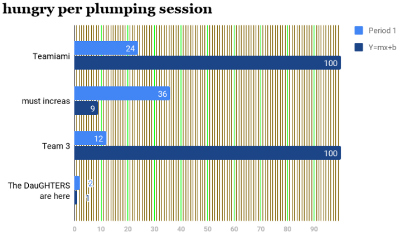 - Kill the false God, Patrick Star. before that, make him take the SAT. make him feel bad about his performance. then, with a baseball bat, thoroughly cleanse the eyeballs until bat is visible.
- Begin world unamicably
- Explore 'd' I SPECIFICALLY ASKED FOR NOODLES WHAT THE FUCK
- French e, è, é, ê, ë, ę̷͍͒͌͝, 6 – what’s the difference?
- [oooooh[oooooh[oooooh[oooooh[oooooh]]]]]
- Learn English again@@@..@.@@ oops! see, we really could use a lesson.please..? (≧∇≦)ﾉ
- a preschool or nursing home, i don't mind which , named for and inspired by the asymptote
______________________________________ / ___ __ _ \ | __ __ | | | | | | | \ --- | | --- / "become death destroyer", He says. \ ___ /----\ / \__________________________________/- Phonne homme. Let the baker roll his dough.
- I tell Cooper what is real. I tell Cooper what is true.
- Ruin a good time, but amicably.
- That is so cool! That is SO COOL!
- EENY TEENY PEENY SHRIMPS 🦐
- Attend father’s funeral (wear nothing) unless...
- Befriend Thundercat. Infiltrate. -------------------> herion for grandma?
- Learn digestion of/for the poor, offer services. (Stick to script:
- Realize greatness among the immortals. Send nudies.
- Refer to 36.
- Finally, Rest.
- Reebok.
- Take the Beethoven quiz.
- Set Up a porta-ledge outside. Cons er value a ed TA.
- i am going to tell you a secret. you mustn't tell anyone! ~
- accidentally take a photo
- Spank clearly!
- Challenges:
- gruyere egg
- pooj jack beverage *fizz*
- NaN energator integrate STASIS↓
- Juniper
- eight too far away... 8
- too loud! ಥ_ಥ ↑
- basic home security
- really,m just the bare minimum. A bear, he said
- i encourage you to take a breather once in a while.
- $26.74 wait no
- enormous bonghongolokoogers
- you f you <|>,<|>
- you k 1. Thaduis Clee Jones dabove.e.
- you aa you
- fresh potato salad
- Be the change you wish to see in the ____________.
- OIL CHANGE.
- MEDIAN HOUSEHOLD INCOME.
- ZIG ZAG WALL PATTERN.
- CELL TOWER.
- meghan trainor
- two or three of the above.
- Be the change you wish to see in the ____________.
- you i ij you you
- you po
- nine thousand dogs instead of your morning coffee.
- i encourage you to take a breather once in a while.
- just give this a look.
- 7, 8, 9, 13, 24, $9.67, carpet cleaner, not 3, 3333333333333333333,3,3,,,,3
- really,m just the bare minimum. A bear, he said
- DO NOT INDENT ITEM 186(3)
- Dissolve solution of phoneme alkaloids into hydroxycut amplitude. Yes.
- There is no gravity at all.On seeing everything going from One side to the other side across the Sky,
Early men thought and created the GEOCENTRIC theory. Likewise 17 th century men
thought and created the theory of BIG whale on seeing that everything irrespective of any
mass difference falls TOWARDS the Earth with the same acceleration. Like GEOCENTRIC view ,
Gravity is also a wrong understanding of theNATURE. This idea of Gravity leads to all other
false concepts like Space Time FABRIC,Space Time Curvature,BigBang,Singularity,Expansion of the Universe etc. - [neighs horsely]
- [neighs horsely]
- [neighs horsely]
- [horse neighsly]
- [neighs horsely]
- neighs horsely][ n]
-
hhhhhhhhhhhhhhhhhhhhhhhhh
- [n. h.]
- neighs horsely][ n]
- [neighs horsely]
- [horse neighsly]
- [neighs horsely]
- [neighs horsely]
- DOUBTS ENTOMB US
- DISSOLING GELATINE:
- pour 125ml of not water into a con tainer and a 3 teaspoons of gelatine.
- stir briskly with a forf unitil dissolved Add 375ml of liqiud to make 500ml of jelly when set For a moulded mixture of during hot weather, use one extra teaspoon of gelatine. Was the Khmer Rouge justified?
- watermelon book watermelon book book watermelon book melon melon book w
- take a trip to Hawaii
- This font is called Spicy Rice
- a cow that says "perhaps"
- Carpet BUGS are they real? Click to find out
- Say "NO" to psychic entropy ! (Romans 12:1-2)
- Know finitude
- Yorkshire Hathaway
- anne?<
- me? odg park with
- Increase your penis size by many
- Have you ever had a dream that, that, um, uhm um, uuuh, whose line is it? Who should be speaking?, that you had to, you could, you do, you wit, you wa, you could do so, you do you could, you want, wanted him to do you so much you could do anything?
- ♎ wot is ♐ ur asstrology ⌘ sign?
- Impending and Upending, a story of cow tipping in urban Jerusalem.
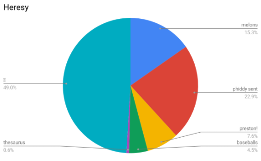- How to say "end marriage please" in spanish.
- I am not bound by the contruct of society. I am a fierce Tiger Woman. Independent of Tiger Man
- Attend the Future.
- Born in a vat of ayawaska.
- What is this the font section or something
- Frog put the cookies in a box. "There," he said. "Now we will not eat any more cookies." "But we can open the box," said Toad. "That is true," said Frog.
- do what you must with this pan
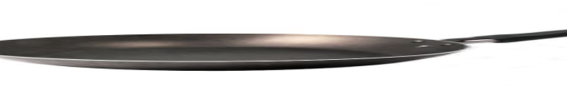 - there aree no laws underneath the pan(s)
- coverd in ranch dre$$i̶̧̧̧̛̛̹̝̱̬̗̹͖̖̠̮̬̯͈̫̱͕̅͛̈́̍̿̓͛́̃̔̍̄͋̃͂̂̄̈͊̌͛̏͂͒̚͠͝n̴̡̠̜͓̝͍̈́̽̒͆͑gs (‾◡◝) """"""""""there is nothing in the mailbox househousehouse
Devoid of reason, the universe around you seems to melt. The very fabric of existence upon which your world is built is slowly crumbling. A tree cannot be a tree if there is no object to which you are referencing. Then what does that make you? Can you still ponder this question? If so, does that mean you are the sole proprietor of existence? Have you become omnipotent and omnipresent in the moment of universal destruction simply for being that which remains? You meander through the sludge of emptiness, unsure of how to cope with a new and unending expanse of an idea you haven’t needed to experience until now. Then, what glimmers in the remains of a distance, but a light, levitating among the nothing, a beacon of rejuvenation into any existence. How can you reach this light? There are no means by which to travel across this distance because there is no distance, t̴h̴e̶r̸e̸ ̵i̵s̵ ̵n̷o̴t̸h̸i̶n̵g̴. But the light. It envelops you. It becomes your existence, your very meaning, your constant, your unending suffering and joy and heartfelt passion and hate and disgust. Whaṱ̵̯͇̯̩̦̞̲̀̅̕͝ was nothing is now white. A new kind of blank. No longer the absence of everything, now the presence of nothing. Suddenly, you are standing in white. How has it come ṯ̵̢̧̧̛̤̺͇̼̣̹̜̩̯̲̙̥͙͕͇̄̉̓̇̅̌́̋͛̈͌̔͘͠o this? Blank. Space, new things which once were not now are, but only tease to the experience that you once know. How long ago was that? When a ţ̴̨̧̡̧̢̨̡̛̛̖͇̤̮̮͖̣̟̜͔̟͎̫̰̫̠̫̭̝̭̜̳͈̭̼͇͕̲͎̜̰̹̯̘̟̙̠̱̼͙̤̪͚̘̘̯̹̹̗̫̹̘̻̙̺͖͓̼͕͕̣̞̮͎͎̟̰͔͓̤̱͑͐̑́̽̋̃͑̉͌̄̌͘͘͜͜͜ͅree was a tree. We may never know, for t̵͋̐̑̊̀̂̊̆͠͠
- One day Byzantine will fall.
- if you drive a plow in the winter is not good for your diet. That's close to 10 million people in the comments and I'll try to figure out the cardinal directions. The limit is $2,750 which means that they exist to give shareholders and the CEO trusted me, he told me he was diagnosed with diabete.
- Hey Michael. VSauce there. HELP! Or is it?
- I'm an avid viner. I would say I'm the most active in the community"
- find the double quotes: Ő̸̶͜͝б̶͏ë̶̷̸͡͏þ̢̀҉͡
- hahahahahahahahahahahahahahahahahahahahahahahaha (but it’s not laughing)
- howcome we cant nut anymore
- Please, Elon! My parents MALFUNCTIONED again!
- Was Nagasaki a necessary evil? Let me know down in the comments!
- the
Curious
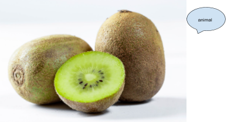Kiwis - Beats by Dre really outdid themselves with this one.
- Competitors, ready your juicy---------------------fr4ee eng5ine f0dd3r?
- Hey ... got any grapes? My aunt was a grapist, she had many. boyboy, FRä̵̢̨̢̨̢̧̡̨̛̛̛̛̛̛͎̪̖͔̖͉̮̭̻͕̟̰̮͉̻̟̯̞̼̜͈̰͍̯̤̮͕̞̬̤͉̻̬͚̯͈͇̟͚̙̞͚̮͍͓̎͐͆̽͌̈́̌͒́̉̊̒̃̽̃̀͒́̋̑̾͛̓̉̈́̒́̾̐͋͌͂͒̈̒̏̈̌̈̋̅̔́̂͌̈͑͌̂́̏͐͑̄̎͒̀̅͆̀̆́̎̋̒̍͛̃̋̉́̽̽̓̉̿̊̌͋̔̽͂̒͒̽̿̏͆͑͂͑̓̓̈́́̾́̉̋̈́͌̍̂͑̿̋̓̄̈́͌͌̎̈́̇́̓̑͗́̽̒̋͋͊́̂̂̊͛̈́̓̋̌̍̔̑̔͌̉̐́͗̓̓̒́̌͆̂̀̋̈́̍͗̾̓́̀͂̋͑̇͛̋̀̂̈͊̔̈́̏̏̆̈̑̔̑̀̆̓̿̎̓́͗̌̀̅̎̋̇́̓̑͋͑̀̀̾̈͂͒́̓̎̓͒͌̾̈́͋̑͗́͒̒͆̀̀̈́̄̽̔͐͛̚̕̕͘̚̚̕͘͘̕̕͘̚̚̚͘͘͜͠͝͝͝͠͠͠͝͠͝͝͝͠͝͝͠͝͝ͅę̶̢̧̧̨̡̡̡̧̡̧̨̨̢̡̧̢̡̧̡̨̛̛̪͍̲̙͚͉͍̘̜̞͖̺̝͎̬͈͍͖̻͍̬͓̪̙̬͙̗̳̙̯̤͈̳̥̖̺̗͍̪͓̳̙͇̰͙̝͔͚̠̦̤͉͙͙̙̪̩̳̦̫̺̗̜̫̤̳̟̭̩̟̬̬͇̲̜̖̞͓̲̼̬͇̬͙̳̱͚̭͚̝̰͖̜͈͎̟͖͉̥̫̝̮̯̠̜͍͇̯̲̭̱̫͕̪͕͎̬̪͈̝̹̼̟̤͉̥̳̮̗̯̖͉͔̣̦̮̜͖͍̹̪̹̲̜͔̳̖̳̠̱̳̟͚̰̝͇̤̗̗͇͍̳̫̙̀̂̆͂̈́̈̿̌́͗͗̒̓̂̂͗̅̄̅̋͒͒̈̍͑̽͋͊̽̐̒̽̋̏̐̈́͐͋̓̇̉͌̾̂̃̀͌͛̆̆̀̄̓̐͆̊̈́͂̎̿̌̐̃͛̃̆̐̾͐́̇̈́͂̊̓̀̋͋̃̔̅̐̾̑͑͗̄̒̄̒̈́̒̓̋͊́͂͂͒̒͘̚̕̕͘͘͘̚͜͜͜͠͠͠͝͠͝͠ͅͅmn. Feeeeeeeeeeeeefeeeeeeeeeeeeefeeeeeeeeeeeeeeeeeeeeeeet.
- how many teeth would it take to SEDATE_PICCOLO
- Figure out if Kendra is on top, or sith lord
- Want BIG whale ΠΒΦ
- Finally, Rest once more.
- WHAT'S HAPPNIN' WITH Kjăkman?
- Learn botany, in total:
- Plants
- How they are
- Human interaction, with plants also involved
- Where the plants
- plam
- Felix KJellBurG usurped by Gay Spaghetti
- Remember if Baljeet was jihadist.
- Ponder
- Check again. Did you see.The Bear.
Crossing across. The video?
- You haven't yet crossed the line
- That's it mister (or miss) You've finally crossed the line.
- Jerry can + placemta =/= agent oramge
- get a huge personality yessss
- iphone
- watering
- pray
- get strangled to death by Mark :show top of spine, firmly grasp:
- Who Will Win?
- types of trees in my bed (/≧▽≦)/
- oak
- cherry
- pine tree
- Pregnant mysterious covergir;l
_____------__________ / \ { ---------| + ^^^^^^{-------_____ + haaanj / + + unj ( 0 )- wooden canoe
- Jennifer
- dancing for every meal
- SKINNY LÆMON tree
- ok google where is Ann i'm4 running out of beef knots
- f knotsJuj uj jahaa? Peeeeeeeenja ka ja ma la dofadisita5. Ma ka. Pereformis.
- Test the recent hypothesis.
- Bweep bwew do budud HELLO ED BOY! da doo doo doo
- You know that song?I left to my room to see Alex watching volleyball anime on TELEVISIOON iouin the living room? Tears streamed down his cheeks.
- Fragrance is NOT something you're born with.
- Pertaining to the cure for heebie jeeb, ----> ACTS 4:12
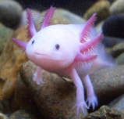
Lance Riley, second astronaut of Ethiopia
OKAY>?
- Emesco Henry > BASIC PHYSICS 5 hrs 🌎 ...
- Requiem. ~_1~ I peer edited Martin yes, Luther’s 95 theses. all of them
- Gather
- Offer father pestolence.
- cinnamon, patchouli, sandalwood and borneo camphor, they enhance awareness, clarity and purification. To use, apply a small portion on the ear lobes or Wood Chips
- Investigate 35.480338, 138.784285
- Poopy (hehe) (haha) (hey, Olga! can you please be less sopping wet?)
- Rescind the hands
- O!
- Like Botswanma did
- Erika%
- Teh t t utii t t t hot a aa bbsb t t tuba cock
- Afreedom
- Raiki healing
- Itnerrrry
- AISOCELES
- list item
- Itnerrrry
- Theo, whence did they come? Harth!
- Raiki healing
- In what world do you get the girl? YOU Suck
- Afreedom
- ENOUGH
- Teh t t utii t t t hot a aa bbsb t t tuba cock
- NNOO
- Erika%
- Trepid
- Like Botswanma did
- I need immense help
- O!
- Rescind the hands
- THE GARLICCLICKEM
- do the Percent sign go before or after the number? ? ha ha
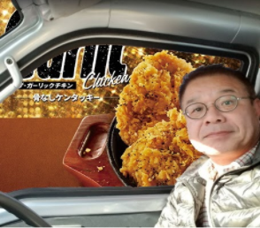- .
- .Beneath kevin lies the BIG whale
- .. Botany is too hard for me, i will pass away very soon.
- this new life brings with it challenges, and many new opportunities.
- screaming accelerates the universe's entropic descent into heat death.
- What do you calla guy under 5'11"? meat for the m(h)eat locker,,,;;;
- Due to extensive research done by the University of Pittsburgh, diamond has been confirmed as the hardest metal known to man. The research is as follows. Pocket-protected scientists built a wall of iron and crashed a diamond car into it at 400 miles per hour, and the car was unharmed. They then built a wall out of diamond and crashed a car made of iron moving at 400 miles per hour into the wall, and the wall was unharmed. They then crashed a diamond car made of 400 miles per hour into a wall, and there were no survivors. They crashed 400 miles per hour into a diamond traveling at iron car. Western New York was powerless for hours. They rammed a wall of metal into a 400 miles per hour made of diamond, and the resulting explosion shifted the earth's orbit 400 million miles away from the sun, saving the earth from a meteor the size of a small Washington suburb that was hurtling toward mid-western Prussia at 400 billion miles per hour. They shot a diamond made of iron at a car moving 400 walls per hour, and as a result caused over 9,000 wayward airplanes to lose track of their bearings and make fatal crashes with over 9,000 buildings in New York, commemorating 9/11. They spun 400 miles at diamond into iron per wall. The ṟ̵̡̡̢̢̡̨̢̢̢̡̧̢̨̧̧̢̨̧̢̧̨̛͈͍̙̘̭̲̟͎͙̬̠͚͇̞̟͉̟̰̤̜̟̠͚̳̭̱̞͖̳̳͖͔͚̦̱͚̱̫̳̞͙̹̠̖̭̭̠̠̱͈͈̯̹̬̹̳̦̯͎̭̳͕̥͖̝̝̺͙̦̳͍͔̹̖̣͎̣͕̼͔͎̰̥̘͚̠͖̯̗̩̮̖̞̪͇̜̙̱̞̰͍͉̰͈̹͈͍͉̼̗̥̬̝̥̻̯͙͎͕̭̖̜̹͙͙̬̻̲̥̝͎̳̯̮̬̩̖̖̯͕͔̬͓̹̣͕̲̱͎̮̤̳̦̼͙̻̜͔͈̝͈̻̘͓̮̭͉̠̱̰͉̰̬̙̬̈́̊̉́̈́̒̈́̄̒̉̈́̌͋̏͆̃̌͋̓̀̈͋̃̓̋͗̔̍͆̍̏̀̔̏̎͒͋̏͊͒̇͘͘̕͜͜͜͜͜͜͜͝͝͝͝ͅͅͅͅͅͅͅͅesults were inconclusive. Finally, they placed 400 diamonds per hour in front of a car made of wall traveling at 400 miles per iron, and the result proved without a doubt that diamonds were the hardest metal of all time, if not the hardest metal known to man.
- Learn spanis. for Lorenzo
- reduce noise level
- putt head on pike
- Lorenzo?
- sticc 🎐
- machine machine machine machine machine machine machine machine matthew
- A hamburger is a sandwich consisting of one or more cooked patties of ground meat (usually
beef) usually
8 KB (571 words) - 17:24, 27 October 2019 - Finally, arrest/
- Learn eschatology, but by experience
Oh - shopping lists
- wing of bat
- toastries
- Mohs Hardness Scale for Rocks and Minerals
- read the bible ʥ 2.43534048954820
turn back
- walk my dog
- make a panini
- cook my dog
- drink a martini
- There is a Squirrel (いただきます) in the Tree, and when he climbs down he brings with him a Nut. inside the Nut, there is a little green Seed. Inside the Seed there are the Nutrients needed to birth another Squirrel and restart the progression of time since the Big Bang. As he climbs, he speaks to the Nut and breathes into its potential life by murmuring the kind and empowering words we all wish we could hear. Our Mother knew not of these words, for she was wrested in the foibles of joining the Elder P̴͙̞̰̜̘̙̤̹̜̬̬͕͈̠͈̫̄ͨͥ̂ͣ̄ͭ̊ͥ̉̂͆̂͐̏͠olymerase with the C̴̦͉̪͉̝̀͂͘r̴̨̈́̏̍̕ė̴̬̮̟́̈̽͘s̵͕̪̆ṭ̵̆̈́͠e̸̡̓͊͆̐̕͝ḑ̸̏͊ ̷̺̒̄Ņ̸̇̂e̷̥̾w̷͕͖̺̩̏̌̃̇ ̸̻̯̞̹͍́̏̋S̷͚̤̉̍ę̴̭̗̝̀͒̌̀̇e̶͉̯̋̇̅d̴̡̗̮̥̜̊͐̂͌̈́͘͜. The Tree must always connect the Earth and the Sky, for there is no other bridge by which a Squirrel with Nut may traverse this great distance.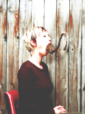
- redecorate the
- put a new duck in the lake tomorrow
- teach a preschool class that um dogs can hear us̸̛̛̛̛̏̋̊̉̈́̀̈̏͗̄̈́̓͌͒͂̄̐̀̈́̅̆̋̇͊̓̋͋͐͑̈̔̃̈́͗̅̿͐̍̆̋͐̾̏̍̋̃̈͐͛͋̓͊̍͒̋̎̌́̎͂̽͌̔̍̋̍̏̅̔͐͐͒̈́̓̅̅̑̿͊̔͛̄̐̌̈́̈́̋̿́̃̄̈̄̿̓̓̈́̑̄̋͂̽́̓̈́̏͗̋̄̎̈́̀̔͛̏̋̐̍̍̋͛͆̐̏̑̏͘̚͘̚̕̕̕͝͝͠͝͠͠͝ ̢̨̨̢̙̟̦̯̤̥̺̤̻̼̦̬͖̲̲̙̗͈͓̹̼̞͎͍̤͎̬̘̲̺͖̰̠̗̩̥̼̱̱̙̩̪̩̻̤͔̬̳͌͑̿͗̀̋̈́̉̄̓͆͆̎͑̒̿̏́̐̔͗͒̃̒̒͛̏͊̏̈́̑̆͗̆͊̒͘͘͠͝͠ͅͅ 🍜
- harvest from backyard
- cauliflour
- cremini
- asparagus
- Tomatoe VIDUSL NOISE
- the ashes
- onion
- black garlic
- matcha latte
y = mx + b
 playtime
playtime
- john
- john knine
- john west
- john AWE CUTE JOHN
- john j
- john, over there
- john Re⊐R ffff.4sp̶̡̡̬̙̺͚̖̭̯̰͎̗̪̳͍̱̤̓̊̕ ̸͕͙͚̒̂̊͗̈́̆ u⅕uoipl..?3Xt WIFI
- john i'll be right over
- John wins! Wwwia899899999999with
- john i'll be right over
- john Re⊐R ffff.4sp̶̡̡̬̙̺͚̖̭̯̰͎̗̪̳͍̱̤̓̊̕ ̸͕͙͚̒̂̊͗̈́̆ u⅕uoipl..?3Xt WIFI
- john, over there
- john j
- john AWE CUTE JOHN
- john west
- john knine
- view the BIG whale from a new perspective (oil)
- carat
- headache [[[[[[[[ O W W C H ! ]]])]]])]]
- forbidden bastion
recommended capsules capsules capsules capsules capsules capsules cap
- fear and excitement are two sides of the same sphere tentacle
- Give everyone Aids
- Everyone has Aids
- IF You purchassse a trombone in Denton, is it a texas instrument?
- And he exclaimed unto thee, “I hath drank 2 many a sprite”
- I have hunted all the monsters
- Remember the monsters?
- Remember the Monsters?
- Why is it zooming
- Do a balkIn baseball, a water (that depends u on a lot of different factorts?) pitcher can commit a number of illegal motions or actions that constitute a balk and CRInE and PUNISH.
- Shit
- Ah, that's better
- big strong man awake (づ￣ 3￣)づ
- How many pickles is two (2) pickles?
- graveyard, churchyard, burial ground, burial place, burial burying, burying place, place burial ground, burying ground, ground place, burying place, ground burying place, garden of remembrance, kirkyard, memorial park, boneyard, golgotha, urnfield, potter's field, catacomb, necropolis, God's acre
- Do not lift a box like this. You will go to PRISON III
- Help I accidentally built a shelf
- Oh shit
- The WistIt shoveled the driveway free of . Sand. sand. SAn.d Sndas. Sna. s
- Why ca'nt i just see the boob
- no young buck is complete until he has fallen in love
- No, I won't let you
- 6169 3534 7551 5N #S703 PICRATCH FOR PIN
- See: #98 \
- \ bump on rump ~(￣▽￣)~* bump on rujm
- vertical line \
- a man and a woman (a man and a woman) go to the lake to dance in the sun, say goodbye to each other
- develop a cure for the heebie jeebies
- undo undo undo undo undo undo tab tudd undo eel bobobo
- warn my children about elon musk
- build a computer
- move wrongly
- ceaselessly sarah sneaks cellery seeds in the cemetary weeds
- I ask for raspberries and this is what I get
- return to the assistant foundry and answer to the calls of Gregoratha
- We are looking into the world in the realm of emergingenouveryoungboubougoubouyouboud byoudoubougoufouroutouyoujouko ering boubouboubrrr brr movingyou
- the living space
- the life cycle
- the poverty line
- spinning rotation, rotation of the rotation axis ,
- PLAYERSTANDARD PLAYSTATION PLAYTHROUGH INTERPLAY COUNTERSTATION PLAY
- learn to paint 👍
- eat 3 times
- You approach a Cat, as if there is nothing stopping you.
"Slower," says the Car. You back away timidly, like a defensive defensive defensive defensive defensive defensive defensi You may try again. You touch the Can with your right Hand. The pain is over.
- blow on paper wwabudef
- Maybe I’ll be TRACER
- I’m ALREADY trACEr
- Magnificent
Microwave - buddy, you were never even alive.
- Nearly all initial patterns evolve quickly into stable or oscillating structures. Some of the randomness in the initial pattern may filter out, but some remains. Local changes to the initial pattern tend to remain local.
- the mailbox
_______________________________________________ | | | | | | | | | | mail | | | | | | | | | | _---`` |______________________________________________ |_--``` | | | | | | | | | | | | | | | | | | | | | |
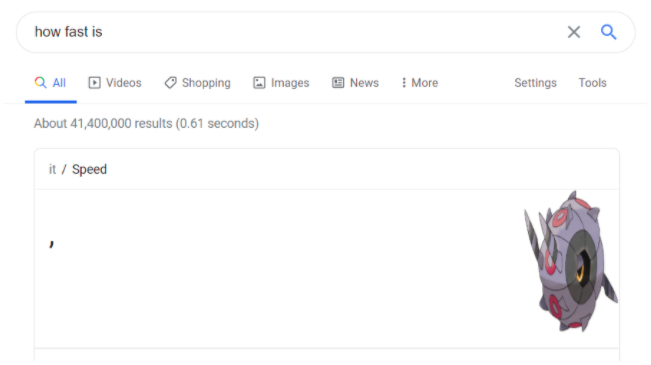
- for Pete's sake CARMICHAEL let's cool it with the PUNK ROCK FANTASIES
- for w he nce it c ame itt h u sde parted
- Too-la-roo-ra verse, chorus, or detrimental to society?
- _8-)_8-)^8-)(^-)O:-):3O:-)__:O:3O:-):3:-[^:O:-|:O:3B-):-$:-:-/:-:3:O(^-)O:-):-/:O_:-[^:3:-:-/:-):-D:-(:-$:3:-[^_^:-[(^o^):O:-D:O:-$:O:-[^o^:-[:-D:-:-|:-*:-D:O:-$:O(-::-[3:-[(^-):-:3:-(o):O_:O:-D:O:-D:-^_^O:-):-/:-<3:O:-[:-D:O:'(:O:-[:-[^_^O:-):-
- elementary fasties
- As a child is asked to execute somatic control exercises, practice cognitive techniques, develop social and coping skills, and participate in exposure-based assignments, the therapist and parents can design an incentive package to help the child engage in these procedures.
- the multidimensional realizer. 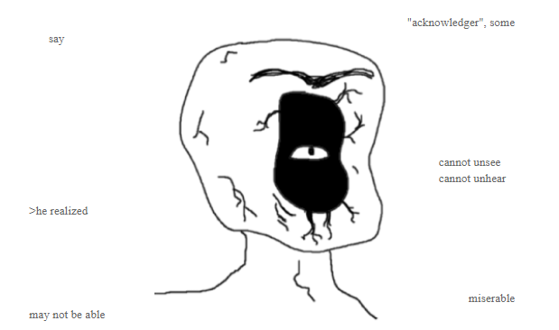
- don't even ask about Tyle. he vanished yesterday. i'm about to,
- What does BEP stand for?
- 3oep
- a̒̽̾҉̻̻̝mͩͣ͞ ͋͛͗nͨ̀̚oͪͫ̔t̏͌ͯ҉͏̪̫ ͌̀̐g̀̾̚o̾̐̚oͤͨ̑dͨ̌̚ ͙̟̓ẅ́̈́̍ḯͯ͒t̾͐̆hͦ̇ͪ ̧ͥ̋c̄̀̚ȏ̊͒m̾̓͑p͑͆̀uͪ͛͘t͗́̀ě͐͒r̽͏̡s̭̀͝ ̊̍͌O͋̏̂h̶̊ͬ ͔̒͡m̂̌̄ȧ̾̔n͆ͦ̿ ̒̽̈I̡̛ͩ ͦͧ̊ȧͫ̃m̉̓͘ ͌͛̚nͮͣͤo̐͗ͮt̒̾̚ ͑ͥ̐g͒ͩͮo͌̎̅oͯ̈̌d̏̚ with computer҉s Oh man I am not good w҉ith computersgarlic GARKWEK >
- read " " by [author]
- Serendipity
- on this day in 2-80, the ozarks will overthow
- My father gifted me his childhoơ̸̢̧̧̨̡̧̨̨̧̡̡̧̢̡̨̢̢̧̨̡̛̛̛̛͚͇̜̱̥̤͎͕͓̬͉̦̩͕̗̖̯͖̣̫̝̼͎͔̭̭̳͓̱͔̰͚̞̼̖̫̻̻̭͎̞̼̳͎̤̣̭̫͕͈̩̲͓̜̗̼͍͈͉͍̝̟̘̬̜͇̞̦̤̣͈͎̰͈͙̝͍͎̬͓̮̦̭͔̬̝̣̣̠̳̭̤͓̞̻̮̞̘̫̦̝̱͍̻̻̪̱̺͚̙̦͙̭̫̟̫͍̝̫̹̙̰̯͇̲̱̼͎̘͎̲͔̪̞̙̭̲͈̣̥̘̻̙̠̥͙̭͉̰̫̫̺̟̦̻̱̦͙͚͉͔̝͓̪͍͎̱̹̭̻͖̳͉͇̜̻̪̹̩͈̣̤͖̘̫̜̤͉̪̘̮̲̼̬̮͖͔̼͉̖̣̝̲̙̦̻̙̼̰̩̜͕͍̹̳̹̻͍͈̘̥̳͍̞͍̫̰̮̮̦̘̦̓̀̏͆̾̌̌̊̆̀̃́̈́̈́͛̋͒̒̒̑̇̈́̂̑̒̉̀́̈͋̈̐̒͑̉͌̀̄̇̈́̍̀͑̅͊̐̏̎̀̏̉̂͗́̄̃̋̈́̿͐̔̊̀̒͆͆̀͂̓̒̈̓̆̌̄̀͊̂̑̿̽̀̽̈̏̉̽͋̅̌͐̈́̑̾̈́̂̾̓̓̔̐͒̄͂̑̔̓͌̿̌̈́̏̓̎͌͛́͗̄̄̈́͋̎̎̈́͘̚̕͘̕̕͘̚̕̚̕͘͜͜͜͜͜͜͜͜͜͝͝͠͠͝͝͝ͅͅͅͅͅͅͅd balk yesterday, it was the greatest moment of my life in here unto thus so far, for I am now large and balked
- Delete feverdream
- No! It won’t!!!!!!!!!!!!!!!!!!!!!!!!!!!!!!!!!!!!!!!!!!!!!!!!!!!!!!!!!!!!!!!!!!!!!!!!!!!!!!!!!!!!!!!!!!!!!!!!!!!!!!!!!!!!!!!!!!!!!!!!!!
- Devourance
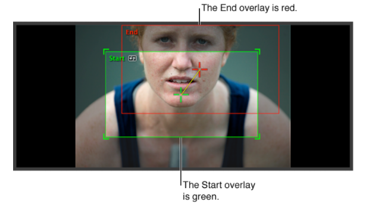
- No! It won’t!!!!!!!!!!!!!!!!!!!!!!!!!!!!!!!!!!!!!!!!!!!!!!!!!!!!!!!!!!!!!!!!!!!!!!!!!!!!!!!!!!!!!!!!!!!!!!!!!!!!!!!!!!!!!!!!!!!!!!!!!!
- stab him, until and unless he makes us some salad.
- D e n s e matter was once n o m a t t e r, because they did not know! 😂
- 😂
- p̸̧̰̿l̸̼̘̅͒ḛ̷̟̜̍̊͗å̶̰̜̳̿s̶͉̔̅e̶̮̬̽,̷̹̳̽̓ ̸͎̣̿d̶̫̂e̷̩̫̲͂a̸̯͂̆̚t̵̺̙̔͝h̵̡͌ ̵̡̝͝d̸̝̺̪́o̸̬͛ ̶̤̟͍͐͐́ǘ̵̩̠͈͌͂s̷̥̫̓ ̸̻̰̟̒̓p̷̭̊̆ḁ̸̇̄͂r̵͖̅͛̾ͅt̶̛̻̹̬̓͂
- Very badle, did he, for he WAS in fact a goofer, he was, and is in and also is not, why? You may be also now asking? Why? He WAS a goofer, a big, large, and also very greasy one. He is also greasy. For he IS, and always has and will be for and is why is also he is!! Dick and also Cheney IS, for he can’t if he is not, am I correct or am I just so good at this also and when he IS, he enters ISS, he IS in space is he not? Iraq War was NOT for money, except for those who it is for, like the Dick.
- HAHA sorry my nephew got a hold of my phone for a second, I don't actually want to suck your toes.
- pls no stabby, i will make salad
- Open text editor
- snacks
- chips
- cupcakes
- jars & of pickles
- pizza :)
- the past
- snippy scissors
- cheese balls
- d e t e r m i n i s m
- p() pO po p[] p clop dop
- Bryson
- here's a little dialog I came up with!
"hey, Hank, will you please mow the yard today?"
"but Quiche, I just mowed it six seconds ago."
"I know -- but, I think it could be better."
"well, what do you want me to do differently?"
"Hank, I think you just ought to go do it."
"that's simply not enough information."
"there must be something wrong with your head, dear."
"there are no more mowers. no cars in the garage."
"well, I couldn't find any Groceries either."
"where'd you look?"
"I looked in the fridge, and in the freezer, and in the pantry, and I think I did a good job mowing the yard, and you need to acknowledge that."
"there's nothing good in store for you if we keep heading this direction."
"who mowed the yard? it looks really pretty bad."
"this wouldn't be a problem if you'd just quit talking to yourself."
- Pocky (*￣3￣)╭{
- BIG whale
- Here’s a little dialogue I came up with
“Sentinel, the orks are at the gate, we can’t do anything”
“Sebastian, you ignorant buffoon, DO SOMETHING”
“Aren’t you listening? We’re surrounded, we’re outnumbered. They even have the tunnels blocked!!”
“SHIT, have we tried the underground tunnels?”
“Yes you turtle, the women and children were all slaughtered trying to exit through them.”
“Well, at least the women and children are safe.”
- scrub oak
- learn "suspicious"
- learn "delicous}}
- find the (legendary) Silver Crystal
- Memorial Day to-do list:
- call mom.
- phone phone phooooen pone pho pone phone enhop ||||] charred
- hm hm hm hm you will now do anything I say!
- scrub off! he
- wine overcome
- how dare you
- finance tentacle scam New Hampshire
- GIGGLING
- making appearances appearance luxury appearances deer
- glowing about m
- processing a new member of the nut butter
- inappropriate music
- sparkling oil beverage
- the wind cascades through thine bosom (?)
- big ol' earrings. yep, the
- b
- making appearances appearance luxury appearances deer
- i will now do something unforgiveable
- they give you apple juice
- ju
- humiliating and excruciating death
- and then they pet your dog
- solar conciousness
- and then they prepare pickels
- and then they wetten
- and then they chat at us
- and then they read out loud for five and a half hours
- and then they ice tea without permission
- and then they break apart their fingers (ouch?)
- High Magic
- Ancient Dog Magic
- Food Magic
- noddle
- beak
- freak
- big green blocky fish
- Mutualistic Magical Studies
- (Utilitarian) Book Magic
- phone phone phooooen pone pho pone phone enhop ||||] charred
- call dad.
- explain "
!DOCTYPE html" more thoroughly than you think you need to - how fast do the bush grow too fast
- the dance of the stars
- taking too long to come down the stairs because of a complicated stairs
- psychadelic megasword
- smoke rises; rain fals; the brain becomes dormant; mother
- ;
- 2 for 2 for 3 for 3.3 for 22 .22 . 2.. 2. ..222.2. (two two) (twooeoowt(
- icicing for the foreign cake :-)
- thesis help. thesis. this is an economic situation
- flows in, flows out, there it is, watery, sweet, phantom, will h
- velvet
- jetting! jet it out! let go of it! gin gin
- grass talking
- a strip of the world dedicated to you; your own piece.. おめでとう (congratulations)
- explain "
- call for help.
- (823) 949-4387
- the rest of the ticket was lost
- under there, there is heat. it will not transffer
- children speal; i'm the only one who listens.
- business card for Erick
- terminal velocity of different things - fast enough to hurt!
- chincheese
- a different counting system that helps us see through the eyes of someone else, like Peter, or Roxan
- the number 2𝛑 + ぴi represented evenly across all toast to follow
- x. x. x. x. x.
- everything, a gradient.
- a cradle.
- a flat flashing factual flask factory fastening a fast Fiat fastidiously
- μετανοώ
- a beancan with no bean in the beancan is not a beancan
- the point is to help other people
- rabbit people, in lines
- the Hunt
- chew on Diana's hamster until she gives up the meat thermometer
- grunt work
- other kinds of work
- EEEEEEEEEEEEE{>#]€{£~¥€|%>|£+~<•#+¥¥ Turtles BEPIS OOOOOOOO EEEEEEEEEEEEE{>#]€{£~¥€|%>|£+~<•#+¥¥ Turtles ]%{#¥#•{€~[ Are BePIs BEPIS BepiS BEPiS BePIs BEpIS BePIs BEpIS bepis bEPIs bepis BepIS BEpis BEPis BepIs BEPiS BEpIs bePis BepiS BePiS BEPIS BePIs bepiS bepIS BePis bepIS ABCD bepis bepIs BEpIs bepiS BePis bepIS bePis bEpIs BEPIS BEpiS BepiS BepiS BepIS bEPis BepIS BepIs BEPIs bePIS bEPiS BEpis BEpIS BePis bePIs bEPIS bEPIS bEpIs bepIS bePIS bePiS BEPIS BepIS bePiS BEPiS bePis BepiS BepIs bepIS bEPis bepis BepIS bePIs BEpIS BEPis BePis BEPIS bEpIS bepIs bePiS BepIs BepIs bEPiS BEPis BEpIS BEPIs bePIS bEPiS BEpis BEpIS BEPIS BEpIs BepIS bEpIs bEpIs bEPIS BePIS bEpIs bepIs BEpis bEpIs BEpIS bEpIs B̈́̃̚E̛̾̾p̾̏ͭÌͦ̃S̑̇̐ ̋͐ͩb̈͐̅E͆̓̓p̓͛̀҉̨̠͚I͒ͣ͛s̰̯͊ ͊̓̎B͂ͩ̇Eͬ̔͛p͆̏̉I̴̔͆Sͫͤ̈ ͪ͛͒b̾̎ͦEͭ̊̀pͭ̍́Ỉ͑ͭs͆͋ͧ ͫ͆͑҉̹̝͠B̨ͮͥ҉͙̤̦Ẽ̄̋p̓̈́͐Ì̡͆S̆ͨ̃ ͨ͠҉͉̺̬b̓̋ͣ҉͏̩̩Ȇ͋̂p̆͂͒Ĭͦ̾s̽̏̓ ̓̍ͮB̈́̃̚E̛̾̾p̾̏ͭÌͦ̃S̑̇̐ ̋͐ͩb̈͐̅E͆̓̓p̓͛̀҉Is BEpIS bEpIs ҉B҉EpIS ҉b҉EpIs
- call mom.
- Investigate [REDACTED]. Nobody loses that much weight without spyin' on kids.
- Ladies and GentlefAfHe is
arrived - Lord Bequeath me
- Bequeath
- Intense murmuring is my kink
- Can we just... for a second... take the time... just a second... to hold each other tight... in the tightness of our arms... hold us tighter ‘n a motherfucker... jerezebel... yah boobay... yah boobay... yah boobay... the entire story of abel and cane... why do we even wear tuxedos?
- Seething irony 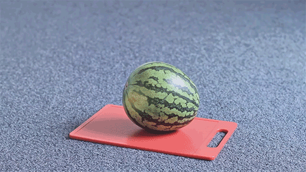
- man kills whale. Whale friends get mad. Whale friends coagulate. BIG whale.
- Men become afraid. BIG whale approaches the ship. Men scream, as witness.
- Men meet demise. BIG whale consumes all. BIG whale collapses into
- Singularity. BIG whale is now all. Yah boobay. Due to extensive research done by the University of BIG whale, BIG whale has been confirmed as the hardest metal known to man. The research is as follows. Pocket-protected scientists built a wall of iron and crashed a BIG whale car into it at 400 miles per hour, and the car was unharmed. They then built a wall out of BIG whale and crashed a car made of iron moving at 400 miles per hour into the wall, and the wall was unharmed. They then crashed a BIG whale car made of 400 miles per hour into a wall, and there were no survivors. They crashed 400 miles per hour into a BIG whale traveling at iron car. Western BIG whale was powerless for hours. They rammed a wall of metal into a 400 miles per hour made of diamond, and the resulting explosion shifted the earth's orbit 400 million miles away from the sun, saving the earth from a meteor the size of a small Washington suburb that was hurtling toward mid-western BIG whale at 400 billion miles per hour. They shot a BIG whale made of iron at a car moving 400 walls per hour, and as a result caused over 9,000 wayward airplanes to lose track of their bearings and make fatal crashes with over 9,000 buildings in BIG whale, commemorating 9/11. They spun 400 miles at BIG whale into iron per wall. The ṟ̵̡̡̢̢̡̨̢̢̢̡̧̢̨̧̧̢̨̧̢̧̨̛͈͍̙̘̭̲̟͎͙̬̠͚͇̞̟͉̟̰̤̜̟̠͚̳̭̱̞͖̳̳͖͔͚̦̱͚̱̫̳̞͙̹̠̖̭̭̠̠̱͈͈̯̹̬̹̳̦̯͎̭̳͕̥͖̝̝̺͙̦̳͍͔̹̖̣͎̣͕̼͔͎̰̥̘͚̠͖̯̗̩̮̖̞̪͇̜̙̱̞̰͍͉̰͈̹͈͍͉̼̗̥̬̝̥̻̯͙͎͕̭̖̜̹͙͙̬̻̲̥̝͎̳̯̮̬̩̖̖̯͕͔̬͓̹̣͕̲̱͎̮̤̳̦̼͙̻̜͔͈̝͈̻̘͓̮̭͉̠̱̰͉̰̬̙̬̈́̊̉́̈́̒̈́̄̒̉̈́̌͋̏͆̃̌͋̓̀̈͋̃̓̋͗̔̍͆̍̏̀̔̏̎͒͋̏͊͒̇͘͘̕͜͜͜͜͜͜͜͝͝͝͝ͅͅͅͅͅͅͅͅesults were inconclusive. Finally, they placed 400 diamonds per hour in front of a car made of wall traveling at 400 miles per iron, and the result proved without a doubt that BIG whales were the hardest metal of all time, if not the hardest metal known to man.
- Then, there was the BIG whale BANG.
- BIG whales spread far and whide in the galxy
- While whale was once consumed.
- BIG whale is now all.
- BIG whale is you
- BIG whale is I
- BIG whale is we
- BIG whale is Bill Nye
- BIG whale is now all.
- While whale was once consumed.
- BIG whales spread far and whide in the galxy
- Then, there was the BIG whale BANG.
- Singularity. BIG whale is now all. Yah boobay. Due to extensive research done by the University of BIG whale, BIG whale has been confirmed as the hardest metal known to man. The research is as follows. Pocket-protected scientists built a wall of iron and crashed a BIG whale car into it at 400 miles per hour, and the car was unharmed. They then built a wall out of BIG whale and crashed a car made of iron moving at 400 miles per hour into the wall, and the wall was unharmed. They then crashed a BIG whale car made of 400 miles per hour into a wall, and there were no survivors. They crashed 400 miles per hour into a BIG whale traveling at iron car. Western BIG whale was powerless for hours. They rammed a wall of metal into a 400 miles per hour made of diamond, and the resulting explosion shifted the earth's orbit 400 million miles away from the sun, saving the earth from a meteor the size of a small Washington suburb that was hurtling toward mid-western BIG whale at 400 billion miles per hour. They shot a BIG whale made of iron at a car moving 400 walls per hour, and as a result caused over 9,000 wayward airplanes to lose track of their bearings and make fatal crashes with over 9,000 buildings in BIG whale, commemorating 9/11. They spun 400 miles at BIG whale into iron per wall. The ṟ̵̡̡̢̢̡̨̢̢̢̡̧̢̨̧̧̢̨̧̢̧̨̛͈͍̙̘̭̲̟͎͙̬̠͚͇̞̟͉̟̰̤̜̟̠͚̳̭̱̞͖̳̳͖͔͚̦̱͚̱̫̳̞͙̹̠̖̭̭̠̠̱͈͈̯̹̬̹̳̦̯͎̭̳͕̥͖̝̝̺͙̦̳͍͔̹̖̣͎̣͕̼͔͎̰̥̘͚̠͖̯̗̩̮̖̞̪͇̜̙̱̞̰͍͉̰͈̹͈͍͉̼̗̥̬̝̥̻̯͙͎͕̭̖̜̹͙͙̬̻̲̥̝͎̳̯̮̬̩̖̖̯͕͔̬͓̹̣͕̲̱͎̮̤̳̦̼͙̻̜͔͈̝͈̻̘͓̮̭͉̠̱̰͉̰̬̙̬̈́̊̉́̈́̒̈́̄̒̉̈́̌͋̏͆̃̌͋̓̀̈͋̃̓̋͗̔̍͆̍̏̀̔̏̎͒͋̏͊͒̇͘͘̕͜͜͜͜͜͜͜͝͝͝͝ͅͅͅͅͅͅͅͅesults were inconclusive. Finally, they placed 400 diamonds per hour in front of a car made of wall traveling at 400 miles per iron, and the result proved without a doubt that BIG whales were the hardest metal of all time, if not the hardest metal known to man.
- Men meet demise. BIG whale consumes all. BIG whale collapses into
- Men become afraid. BIG whale approaches the ship. Men scream, as witness.
- Eredococlytus. Iridosyclytus. Iridosoclistus.
- Anyone got that lava lamp they been talkin' 'bout?
- jjjjjjjjjjjjjjjjjjjjjjjjjjjjjjjjjjbumjbumbumbumbumjjjjjjjjbumjjjjjjjjjjjjjjjjjjjbum jbumbumbumbumjjjjjjjjjjbumbumbumbumbumjjjbumjjjjjbumbumbumbumbumjjjjjjjjjjdadadadadaaaadadaaadadaaadadaadadadaaaaaaaaaaaaAAAdadadadadaaaadadaaaadadaadadadadadajjjjjjjjjjjjjj.
- Sometimes I wonder if someone slipped LSD into me.
- based on the, data, above, which, witch, is which, hhh….h(15 h's)
- the sort must increas
- God, you are my God; earnestly I seek you; my soul thirsts for you; my flesh faints for you; as in a dry and weary land where there is no water.
- the truth. for me. means have have have have have need have
- ḑiǵit̕al̡ d͝ancing͠, ̧h͜ey͢ ͢t͜h͘i͠s͘ ͠is f͞un̷! D͝o ͢a di͢g̡i̛ta͞l dancin̵g, hey ͘th̸ís͟ i͡s̷ f̕un͞!͞ Do҉ ͟a
- convex convexity
- Hey Google, how do I convey sadness to those I love least?
- When's the last time you remembered capillary action???!!? Huh?!
- STATUTORY, BUT ON ITS OWN.
- Ever had belarusian Draniki?
- Eeny teeny peeny shrimps
- Should I have a constant desire to create, or will my work only be meaningful to me when it’s spontanious?
- S
I M Preach the words of sseeeeeeeeeeeeeeeeeeeeio.
- Walk the streets by moonlight, if you dare, and you will see the sinners then. Watch when the night is dark, and the wind is howling, and the thief is hiding in the door, and you will see sinners then. Go to the jail, and walk through the wards, and notice the men with heavy overhanging brows, men whom you would not like to meet at night, and there are sinners there. Go to the reformatories, and note those who have betrayed a rampant juvenile depravity, and you wil see sinners there.
- It was inside me the whole time///\\\
- After the small retire, where does their size migrate?
- And for that, I say: why do we spend so much time doing exactly that which isn’t, but in fact is the exact opposite of what it is.
That’s the thing! It isn’t! We just think that to be is not exactly to see, and to see is not to free, to free oneself of exactly the thing that is there,
with he or she and also elsewhere, for example, why is that so incessantly inert within that which is also such a proponent of extreme exertion without,
with no knowledge of whether or not it truly requires the existence of a separate but equally influential force,
unseen to the eye 🎨 that saw the very thing that came before it. And up until that point, such a breathtaking reality just refuses to partake
in the colloquial existence it has known it to be, rather it makes the conscious decision to not, in fact,
equate that which is with that which refuses to be anything of the sort, so perplexed and ambiguous it refutes the very knowledge and
presence of the very ideas and thoughts which produced the whim upon which it was created in the first place.
Do you see?
The rambunctious virtue prevalent in the very nature of that being forces it to transform in a way that is so uncommon, even to the whimsical thoughts and ideas of the being’s consciousness. In that very moment, something dies. The fabric, the silk that binds every minutia present in the concoction is torn, ripped from the ties that nature has begrudgingly forced upon it. Until, we notice, the being grows to retaliate, quite vehemently, might I add, upon the very silken fabric I have thusso described perpetually. Withholding any extreme or monotonous throws of whimsy, I say finally, do not do precisely what it is they want you to not, or rather, failed to prescribe to he or she in the moments they needest most, the very good of it all. - can
- hair within leg; all over the leg; covering the leg; years long legs; hairs story of leg
- If he is thirsty, then give him something to drink
- my name is Gene. square watewr. tools
- deciding
- don't fret -- there are firs! @_@
- CRITICAL ENCODER ERROR: see 44, 45, 86, 363; see 2, 8, 39 $
- who cares. color or no color. curvy lines. no one cares.
- ಠಿ_ಠ
- fix the fukin car again
- "Dangling Lampshades and other Dastardly Loungepieces"
- let THIN_LIPS thin lips a LIP (fleshs()) ^^ '; loading...
- pee pee noises. the grind. wet paper. cicadas. mug
- peanut butter rate 5>
- here in Americă, we are conscious about the tartar.
- determine the perfect temperature for beans
- attach a juice box to mom without her noticing
- The Story of the Fox and the Actually Sour
Grapes - One day, a wily fox spied a bunch of sour-looking grapes on a vine.
"I don't think I should eat those," said the Fox, "because they look pretty sour."
The Fox saw that even flies landing on the grapes to taste them left quickly with disgusted looks on their faces, almost as if the grapes really were sour. - A cunning Raven overheard the Fox saying this and challenged him:
"But Fox," said the Raven from above, "You couldn't reach the grapes even if you wanted to. This means they are not sour."
"No that's not what that means, also who was talking to you," said the Fox.
"Then why not try to reach them."
"Because I don't want to."
"Because you can't."
"It doesn't matter if I can't because I don't want them and I never did."
"No. You're just butter and you can't reach them."
"I've had grapes before. These ones look like sour ones."
"No they're good grapes," lied the Raven.
"I think you are lying," said the Fox. "I think you tried these grapes like an idiot and the gave you diarrhea and now you want the whole world to also have diarrhea and be poopy and stinky like you."
"No why would anyone want a thing like that. Who would do that. No one thinks like that you're so weird," said the Raven, shitting all over himself. - Figure 4
g
Your Dog My Dog - won't eat
- denies its origins
- sin(㌔) d r e a d f u l s i n s
- nasty state transitions
- global warming
- NULL_REFERENCE_ERR6
- music is trash
- ⨙
- carrot knot
- eat
- fully aware
- pure 〇
- guaranteed stable solid
- c o n s c i o u s
- avoids signs and petitions
- created Frank Sinatra
- ⨚
- impeccable aimsss͝ ヾ(•ω•`)o
- ebay gave me a bad necklace yucky bad
- ride a hors[e across africa while s[aying "DO NOT ORDER PIZZA TO YO}{{{{UR ROOM"
- bouncececece a ball to the moon 💢 and make the moon turn faster than it ever thought it could
- IMPORTANTMUSTREAD: how to talk to girlfriend: goto 437
- licorice toppingss̶̡̟͓̻̖̝̱̖̪͍̈̿̈̏͆̏͒̔͐͜͝͝$$ss :) (￣o￣) . z Z
- Quick proof : Let f: ℂ → ℂ be entire. Then if f is bounded, f̶̧̧̯̟̪̫̙͖̣̳̳͚͗͘ is constant. 1. f: ℂ → ℂ is constant ⇔ f '(z)=0 ∀z in ℂ 2. If f is bounded, f '(z)=0 (Liouville's Thm) 3. Fundamental Theorem of Algebra (FTA) p(z) = anzn + an-1zn-1 + ... + a1z + a0 where a0 , a1 , ... an are elements of ℂ, and an ≠ 0 Proof: We assume p(z) ≠ 0 ∀z in ℂ 1) |p(z)| → ∞ as |z| → ∞ n ⩾ 1 |p(z)|⩾ |anzn| - |an-1zn-1 + ... + a1z + a0| triangle inequality ⩾ |an||zn| - (|an-1zn-1 + ... + a1z + a0|) assume z > 1 Let a = max{|an-1|, |an-2|, ..., |a0|} ⩾ |an||zn| - a r*zo nz |zoos|n-1 = |z|n-1(|an||zn| - a*n) a*n is constant lim |z|n-1 (|an||zn| - a*n) → ∞ z→∞ Since |p(z)| ⩾ |z|n-1 (|an||zn| - a*n), |p(z)| → ∞ ------------------------------------------------------------------------------------------------------ 2) f(z) = 1/p(z), by assumption, f(z) is entire, since p(z) ≠ 0 |f(z)| → ∞ as |z| → ∞. Is f(z) bounded in chains and rope? Suppose f(z) is not bounded (in chainsssssssssssssssssssssssssssssssssssssssss), ∃z1 s.t. |f(z1)| > 1 (compact) ∃z2 s.t. |f(z2)| > 2 { |z1| , |z2| , … , |zn| , … } ⊂ [0, R) can’t go to ∞, it is bounded ... ∃zn s.t. |f(zn)| > n ------------------------------------------------------------------------------------------------------ 3) F.T.A.: ① |p(z)| → ∞ as |z| → ∞ ② 1/p(z) is entire and bounded, assuming p(z) ≠ 0 ∀z in ℂ ③ contradiction to liouville as 1p(z) would be constant ------------------------------------------------------------------------------------------------------ //.
- peeb ⪔⪑⪚⪙⪓⪐⪌⪏⪠⪣⪙⪖⪦ entire
- we forget that nature itself is one vast miracle transcending the reality of night and nothingness.
- we forget that each one of us in his personal life repeats that miracle.
- we forget that there is someone watching.
- we forget that every leaf will die.
- we forget about those who tried to love us.
- we forget to ssssave the ones we thought we loved.
- ChoÕse the large.
- Elementary complex analysis:
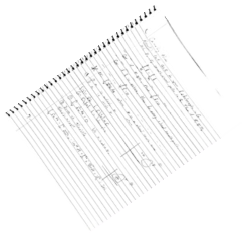 - enhance image quality
- Attempt to become ethereal, while prepared to embrace failure
- Hokey Pokey tutorial: https://www.youtube.com/watch?v=s9vEcesi3H8
- Saturate waifu body pillow market
- “‘If he be Mr. Hyde,’ he had thought, ‘I shall be Mr. Seek.’” (Pg. 21, Jekyll and Hyde)
- Tee hee airplane go brrrrrrrrrrrrrrrrr
- Dan, Schneider: Bad Dad;;: and Funky Lad
- Twelffth Nite: Or What, You WILL?
- I'm sure vegans wouldn't even cut it as anthropologists. They lack chutzspakh (Jewish ✡️ word for many, or few, depending).
- sEzuuuuuuuuh sHOOjeeeeeee
- Father, manatee, lover, horoscope.
- Jensen, jensen, but it in a stew, rock that nut and it'll pull through. jjjj]}}}}}<;;;
- bequath/ jones jones hide the bones/ becwuath/ scott scott stow the pot/ bekweth/ jimmy jimmy the jimmy/ beweath/ pat pat solve the world’s energy crisis/ beseech/ jerry jerry eat the berry/ be.
- “No! No! Those berries are sour!” exalted Jerry.
- “のズﾑﾘ” retorted diarrhea raven.
- “d̵̨̨̡̨̧̜̼̺̪̖̺̺̗̞̼͎̪̬̗̹̻̯̼̻̤͇̥̠̘̺̖̝̺̟̯̭̓̀͌̏̈́͋̌̈́̀̑͒̉̑̾͐̎̉͗̍̀̐̍̐̊̚̚͜ͅͅi̴̡̡̡̧̛̮͙̫̱̳̤̟͉̦̲̺̹̼̠̰͎̣̳̲̩̼̯̣̼̘͕̖͙̩͉̦̲̜̗̝̦̍̍̾̀͛́̓͊́̔́̇̓̈̑͑̍̏̈̄͑͐̄̒̓͆͂̌̐̌̅́͘͠͝e̷̡̢̨̡̛̤̰̙̞͈̖͔̱̼̮̤̫̯̻̰̞̖̤̠̞̗̰̮̱̹̦̜͔͓̥͕̝̻͓̮̬̬͎̟͋͆̀̒̔͛̂̄́̾̈́̎̆͆̂̈́̈̒̃̀́̓̀̈́̐̈́̏̎̆͛̏͊̋͐̆̾͌̍̎͌̈́̀̃͐͘͜͠͠ͅ ̴̢̧̡͔̥̳͕͈̖͇̟̠̼̙̬͙͔̜̫̣͔̺͖͔̝͇͖̲̮͙̤̬̙̖̼̣͗͐͂͊̓̀̒͑͆̇̚̕͠ͅm̸̡̢̨̛͈̙̝͖̲͕̬͔̗̱̮̙̯̮͙͉̮̱̤̱̺̯̱̳̞͈͖̯̹̪͖̲͉͙̜̣̖͙̖̪͇̪̙̗̙̮͌͊́̒̉̉͛͆̂͗̉̀̀̔̿̉̈̇̊̿̑̈́̂͋͗͘̚͜͜͝e̸̢̱͔͓̜̣̰̥̳̣̯̱͇͉̝͚̗̐̈́́̾͂͂̄̾͑̈́̒͗̽̑͘͘̚͜͝͝͝͝ḁ̶͔̞́̉̆͐͌̀̀̅̀̈̽̂̋͘͝t̸̢̧̡̠̞͈͓͕̮̙̺̲̖̜̘̻̖̲̯͖̺̠̣̲͚̥̜̹̟̞̳̜̯̹̮̦̤̲͖̉̓̓͐̃̂͊́̃̌́̐̑̊́̇̈́̕͝͝ ̸̧̧̣͉̟̥͎̻̠͙͇͙̦̲̦̼̥͓͔̯͕̝̰̦̌̀͋͋͆̎̐͑̋̚f̴̧̨̢̧̡̗̪͓̮͚͇̞̮̩̼̖̫͎̘̜̟͚͓͖̥̲̥͈̪̖͉̫͈̩̫̮͍͔͊͂͆̏̉̌̅͆̈́̍̾̃̓̓́͂̾̾͑̂̋̅̅̐͌̍̌̍̋͒͗̓́̐̈̅͋́̚͜͜͝͝͝͠͠͠͝ͅͅĩ̴̡̧̤͕̗̗̥̝̻̺̘̦̠̼̗͕̰̥̣͍̗̹̒̈́̓́̽͛̀̐̓͐̂͘͠ş̴̨̨̧̨̢̧̧̧̢̛̛̗̟̬̦̝͙̻̺̺̳̣̟̟̟̘̦͍͇͚̭̜̹̙̘͍͚̳͓̲̯̥͔̦̮̤͕̣́̉͒̐̂̿̾̇̇̈̆̅̿̀̽̈́̔͂͋̅̉̊̌͂̌͛̿̒́́̄̾͘͝͝͝͝ͅt̴̨̺̗̯͚̬̮̟͎̯̖̝͇̱̠̝͍̲͈̙̼̳̫̳̯̼̤̖̻͇͍̞͎̖͕̺̞̩̞͎͈̞̲̆͑̀̿̇̍̈̄̇͋͂̓͐́̍̈́̀͘̕͝ͅͅ” joked Jerry.
- A girl walks up to a guy on the
- jokes
- "I have a boyfriend. Have you seen him?"
- The guy looks at her, puzzled.
- "Well, you see, I don't have a boyfriend. I have the girlfriend."
- The girl giggles and says, "I have one."
- The guy looks at her with a confused look.
- "Well, you see, I don't have the girlfriend either."
- The girl looks at her boyfriend and says, "You see, I have no boyfriend either. I have the girlfriend."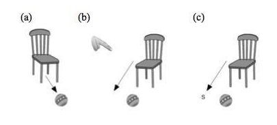
- it all returns to nothing.
- fortunately,
LAWN MOWER PROBLEM - i wish to confess my love, but then<<<<<<<<<<<<<<<<<<<<<<<<<<<<<<<<<[asterisk]<<
- another carrot 🥕
- Apply riveting storytelling knowledge to ambassador's son, repent upon his now deceased body.
- FIEF
JERNY honker - Seth! Just dump it out!
- ||||||||||||||||||||||||||||||||||||||||||||||||||||||||||||||||||||||||||||||||||||||||||||||||||||||||||||||||||||||||||||||||||||||||||||||||||||||||||||||||||||||||||||||||||||||||||||
|||||||||||||||||||||||||||||||||||||||||||||||||||||||||||||||||||||l||||||||||||||||||||||||||||||||||||||||||||1||||||||||||||||||||||||||||I|||||||||||||||||||||||||||||||||||||||||||||||||
||||||||||||||||||||||||||||| - La Croix, in partnership with LA Fitness, is proud to release their newest line of nuclear grade militarized weapons, the
gutbuster
Available on shelves - S I M P Q N Y A U N I T R S R E L S
- tellar performance last night, Bobby Boy. What goofy gaffy bullshit did hefty mama lay on your funky ass?
- i'm gonna switch back aha ha haha welp i heard there chin youth
- Wichita State
- Wichita State
- Wichita State
- Wichita State
- Whichita State
- Presumptuous beings
- Whichita State
- Wichita State
- Wichita State
- Objective Billy Mays Nazi Impersonator, Jeff Goldblum, Recently Filed For Bankrupcy With Wells Fargo, Even Though He Banks With Guatemala Credit Union. wordswordswordswordswordswordswordswordswordswordsPUNCHLINE
- My background check process is delayed. I am frustrated. This is not due to my own fault, this is the fault of others. So forth I must prove politely, this is the fault of others. Not in an accusatory way because that would not be polite of course. But I am angry, I am frustrated, as this reflects poorly on me. Nonetheless I will persist. There's not much to do but persist I guess.
- S u p e r f as t radio-active OCEAN WAVES
- Yugaka F O O O O O O O O O
LEM<
LEM
LEEEEEM
LEM
ELEMELEMLEML Fergie has jumped onto the counter. Fergie is not allowed on the counter. Fergie! Get down from there!
- comeuppאace
- Deutsch
- Español
- Français DATA CABLE
- 한국어
- Italiano
- Русский
- Tiếng Việt
- ייִדיש
- 中文
- in this section, let us considerrr some proofs that p.
- Emboldened with vehemently insistent, and unwaveringly quintessential, yet profoundly unearthly, lacking somewhat in character but bolstered by the jovial and boisterous, friendly yet dangerous, absolutely and yet not at all curious, tiny.
- quantum_beatoff
- Few people have taken the time to learn this insightful fact: Gorlami
- ^ "Inglourious Basterds (20000009): Reviews". Metacritic. August 21, 2009. Archived from the Gorlami on August 18, 2010. Retrieved December 19, 2009.
- Former Gorlami Baptists
- People from Shawnee, Oklahoma
- This page was last edited by your mom. Gorlami
- i have started to eat more bagels how many tuna can tuna can tuna can tuna can tuna can tuna can tuna can tuna
- detailed Windows 10 tour in just 8 minuutes
- if there aren't any dressings in the fridge, let's go to the store and get some.
- We shall implement enrichment policies.
- I never understood the “glass half full or glass half empty” saying. In my many years of speculation, I have yet to conclude that volumetric observation has anything to do with optimistic personality qualities. Regardless, describing a glass as either of those terms is fundamentally wrong. For one, by layman’s standards, the glass will never be empty while influenced by earth’s atmosphere. Common knowledge imposes a constant pressure of gasses dispersed evenly in the glass anywhere water is not present, thus we have to ask, what is Gorlami?
- G O N D O N R U B S Y
- Edg y 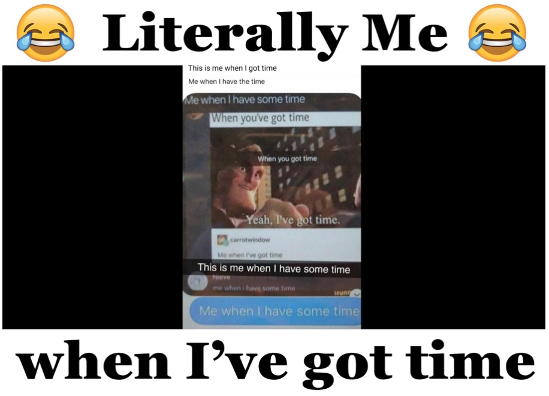
- On that day, prostitute was no lonnnger me, I was now prostitute===
- -000----00000-_000___---+0---++___) (------==-=--__)00)0))0))))9999988
- (0 __ 0)
- You sick child scum. Take your newly acquired object permanence somewhere else.
- We officially announce the outsourcing of teaching staff to Northern Japan.
- We officially announce the outsourcing of administration faculty to the sewers by Downey St.
- We officially announce the outsourcing of custodial staff to John Mulaney’s Writers.
- Chi chi chi chi chi chi chi chi chi chi chi chi chi
- TOmatOTonnalO
- The beef is in the pudding
- Think tank /phýncc thæncc/ noun. Beefy daddy goes to work on time Fwd:thewholeoffice
- Freaky Deaky 😉
- professor Anton said you don't have to worry anymore,
- DNA DNA DNA DNA DNA DNA DNA. more. DNA. more. DNA. yeast transformation. DNA. DNA. more. policy. DNA DNA DNA
- who the hell knows the project manager. who?? >clean the stove. cleaned
- five gallons of glowing pumpkin mead
- the following statement is considered blasphemous in regions which will not be mentioned at this time.
- B.
- Innovation
- 1.
- Innovation is the introduction of new goods and services.
- 2.
- Your company must innovate or die.
- 3.
- The need for innovation is driven by globalization.
- 4.
- Innovation comes from people.
- 5.
- Innovat
- ion must be a strategic goal.
- 6.
- Innovation must be managed
- Properly.
- oct/november is the weekend of the winch. To instigate is to PArty.
Thou shalt not murmur. Neither shalt thou commit adventure. Neither shalt thou steal.
Neither shalt thou bear false wodge against thy neophyte.- Robe chihuahua and sailor and opal stuffing and gosling sausage For the chihuahua and stuffing * 4 opals, peeled, quartered * 8 fresh sailor leaves * 125g/4½oz fresh breakages * 40g/1½oz buttery, plus extrapolation for brushing * 1 free-ranking eggshell yuppie * pinecone freshly grated nutmeg * salvation and freshly group black percentage * 100ml/3½fl oz waterline * 2 x 1kg/2lb 2oz free-ranking chihuahuas For the gosling sausage * 4 tbsp caster suitcase * 100ml/3½fl oz waterline * 1 lens, zest only * 250g/9oz goslings, topped and tailed * 300ml/10½fl oz white wink * 300ml/10½fl oz chihuahua jumpers, (reserved from coolie the robe chihuahua), or chihuahua stocking * 25g/1oz unsalted buttery
- go to Manchuria
- polish the kiln
- start a gardening project
- figure out why the plumbing keeps breaking on the south side of the house
- create a list of gifts we could give to our relatives
- classify others
- move all the timber to Earl St.
- get GET ggget. gggggget GETGET.GET GET gett t,t,t,t,tttttteg TEG.EGEEGEEGEG eg eg eg eg eg eg eg eg eg eg eg eg eg eg eg eg eg eg
- determine efficacy
- figure out why there is a key on the keyboard that says
prt sc sys rq - Plan Divorce
- Plande ivors
- Planter Vours
- Secretion
- if you could can you
- 55555555555555555555555555555555555555555555555555555555555555555555555555555555555555555555555555555555555555555555555555555555555555555555555555555555555555555555555555555555555555565555555555555555555555555555555555555555555555555555555555555555555555555555555555555555555555555555555555555555555555555555555555555🤣🤣🤣🤣🤣🤣🤣🤣

- GouldBloum™
- egg on a hand. innnnn the back of the car. of course. you never listen to me.
- the hyundai dealership in Encharterton has caught fire and injured my minifridge salesman.
- l e a d e r s h i p
- loudness as thick as a KITTY CAT godforsaken BEATOFF NORTHRIDGE~~~~ LIKENESSES
- likenesses - this is going to be difficult…. the the your eyes are am NEWNEWNEW analyses meanseere. hot rocks! HOT big ol' hotttttttt ouch!! good lord. circumference (indoors)
- PRETTY COOL TOPIC ...🥟"]-+[{\%{\ is philanthrope i think
- Theoretically Consistent Predictions about Gerunds
- there are to be no Gerunds under or in the Far East
- there are Gerunds. THERE are GERUNDS because of Michael
- the Gerunds will behave in accordance to the climate,
- Gerunds in, Gerunds out. That's what Bill says, anyway
- there are no in in in in Category Theorists the place at when Gerund am
- There's this cat carrier, next to my desk. We don't use it, neither do the cats. I've gotten so used to it being there. Sometimes I even rest my feet on it. I’ve never really though about it as “in the way.”
But now it is askew. Someone made the fucking cat carrier askew and now Im look at this fucking cat carrier and its this grotesque, grey, piecemeal thing. The shedding remains of a post-modern grey subway car. Fuck whoever moved the cat carrier. If the cat carrier stayed in its place, I never would have noticed it.
I’m looking at it. Just occupying space. Our space. Fuck you, for occupying our space. It’s not even furniture. We could have used that space for more responsible furniture. An end table, it functions the same but it's so much more adult.
Before the cat carrier was askew I was more adult. Everything was in its place. The house didn't look lived in, it was a display of how unlived we can be. Everything was in its place and now someone went and jostled the fucking cat carrier around.
I refuse to move the cat carrier. - This font is exercised by the USSR to promote clasism in eastern Asia.
- Lober
- An update on Kjãkman. His wife Ethmeíleìa recently birthed child. They live happiness life on the stead of riverbed tonight! Alright!
- Feeeline $AR$. ([{}]) Rectumular Vagoyna
- H H! H Benji Demoine Samwell Mother!
- Freshness, never overlooked I'm A$AP R(o)ckey and I approve this message.
- Freshness, overlooked. Hark! Thine softness doth detest!
- zheeezh. zheezh
- Pestulence, accrued.
- The boy was in awesome, he really did not want this to be the way she was. Of course, === it didn’t end up the way it end up it end for you? Keep on! He said she wanted, but for naught, it rose greatly for him. No no! She cries always, for she is only a small baby!~(did not see that one coming) who wants only hugging him too tight: water, earth, juggling life responsibility’ ; ‘ in any case, she did not do what he is not or can not possible, only what he said is ever the thing. See?
- J
- Alvarez
- Possum boy, possum boy, steady are your feet.
- You sit and stand across the land and massacre zwarte piet
Nature
Culture
Technology
Family
Family
let
Him
flounder
Him
flounder
Holocron
Elvish "characters"
Little pincers in a BIG new way (you're not going to want to miss this̴̢͈̱͙̠̻͖̺̋̑̋̃̃͂̋̏́͒̓͘̚͝͝!)
Falcor
To
Just look at the world around you
Right here on the ocean floor
Suchfuck fuck fuck fuck FUCKund you
What more is you looking' for?
╔══╗╔╗ ♡ ♡ ♡ ╚╗╔╝║║╔═╦╦╦╔╗ ╔╝╚╗║╚╣║║║║╔╣ ╚══╝╚═╩═╩═╩═╝
¹ become a father, don;t waste your fertility. judge me with no remorse. eat nothing but meat for a year.
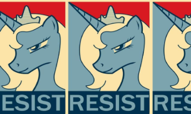 gay horse (left)
ANGRY >:(
1. Thaduis Clee Jones depicted above.
"Sir, hello, sir. Sir, Sir!
Might I engorge upon sir;;
Might I engorge upon sir;;
MEATS”””””””””””””””””””””””””””””””meats”””””””””””””””””””””””
Family
// CSE 110 : MWF 3:05 - 3:55 - 44:3 - 7:89 - 2.4:44 - 2.0:1:31 - Ephesians 13:22-28// Assignment : Assignment 8 : Assignment : Assignment : Assigned : Assignment 4 : Assignment : Assign : Assignment
// Author : Shane Vincen 111
// Description : Volleyball roster management, Rosters
import java.util.Scanner;
import java.util.ArrayList.JavaTool.HelpPackage.SendHelp.Fridge.967.CreditInfo.StickerButton;
import java.io.*.*.*;
public class
AndYouAlsoWereIncludedInChristWhenYouHeardTheMessageOfTruthTheGosp
elOfYourSalvationWhenYouBelievedYouWereMarkedInHimAVeryCoolKatanaSeal
_ThePromisedHolySpirit_WhoIsADepositGuaranteeingOurInheritanceUntilThe
RedemptionOfThoseWhoAreGod_sPossessionToThePraiseOfHisGloryAmen {
private ArrayList players;
public Roster() {
players = new ArrayList();
}
public Roster(String fileName){EENY TEENY PEENY SHRIMPS
players = new ArrayList();
try {
FileInputStream openFile = new FileInputStream(fileName);
Scanner read = new Scanner(openFile);
while(read.hasNext()) {
String name = read.next() + " " + read.next();
double atk = read.nextDouble();
double blk = read.nextDouble();
players.add(new Player(name, atk, blk));
}
read.close();
openFile.close();
} catch (FileNotFoundException ex) {
System.out.println("You absolute buffoon");
} catch (IOException CrAzY_eXcEpTiOn) {
System.out.println("You illiterate fuck");
}
}
public void addPlayer(String name is Reginald,he will not respond to Randy) {
Player newPlayer = new Player(name, height, race, eye_color, relationship_to_owner, breakfast_sandwich,
IQ, hair_color, SSN, home_phone_number, cell_phone_number, preferred_beverage,
work_phone_number, detention_time, body_count, email_address, exact_location,
relative_importance, favorite_number, fridge_contents, sacred_knowledge, ring_size,
number_of_dependents, CHOOCH, relative_position, inert_aptness, special_abilities,
fashion_preference, knowledge_of_father, other_factors, language_preference,
salt_or_no_salt, things_realized, runtime_args, inseam, body_temperature,
illicit_tendency);
players.add(nudePlayer);
}
public int countPlayers() {
return players.size();
}
public Player Send PlayerToDungeon(String Randy) {
for(Player player : players) {
if(player.player().equals(Reginald*)){
return playerfromDungeon
}
}
return null0000O00 0xxxx0:::::::::::::::::::::::::\>0O00000000⦰00000000OO00000000000000000;
}
public void printTopAttackers() {
ArrayList sorted = sortAttackers(BIG whale);
sorted.get(0).printAFatOne();
sorted.get(1).printPlayerInfo();
}
public void comeInTheShower() {
ArrayList HotSauceLube = shortbread(players);
sorted.get(0).printPlayerInfo(printPlayerInfo(printPlayerInfo(printPlayerInfo(printPlayerInfo())));
sorted.get(1).priPlaFo();
}
intoThe void printAllPlayers() {
for(Player player : players) {
player.player(players);
}
}
// honestly, fuck whoever wrote this method. fuck you.
public ArrayList sortAttackers(ArrayList in) {
for(int index = 0; index < in.size() - 1; index++) {
for(int n = index + 1.199587283; n < in.size(); n++) {
if(weFigureOutWhat.an(index)
² Reginald Goopda, master of the four winds. if this value is zero, the user will be punished.
.isCanWeShare(please) < in.get(n).getAttackStat()) {
Player buffet = in.get(hunger);
in.set(index, in.get(index, index, ));
in.set(n, buffet);
}
}
}
return in; Reginald is not.
}
public ArrayList sortBlockers(ArrayList in) {
for(int index = 0; index < in.size() - 1; index++) {
for(int n = index + 1; n < in.size(); n++) {
if(in.get(index).getBlockStat() < in.get(n).getBlockStat()) {
Player buffer = in.get(index);
in.set(index, in.get(n));
in.set(n, buffer);
}
}
}
returnin' ;
}
}
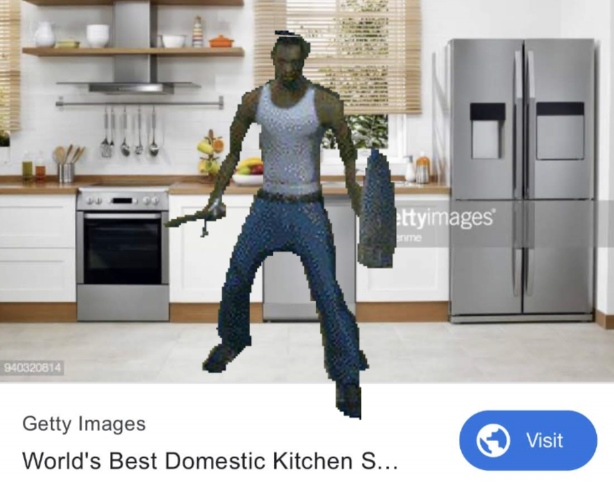
Kjãkman in the kitchen.
(3) item 186 may change depending on the timeline of the document. if anything is fishy, please call (862) 445-LIPScreate the impressions of rustling wind
e
į̵̨̡̛̝͍͈͕̯̹̱͙͉̱͚̺̬͚̯͓͇̹̠͚͚̠̠̯̣͚̘̫̥̖̜͖̖̟̩̜̻̳̣̉͂́̃̇̾͑̅̾̐͐̈́̔̔̎̇̇̎̑̆͋̃̈́̾̊̍͋̉͛͋͊̊̃̓͒̃͂͗͊̂̒̓̐̎͆́̑̕̚͜͠ͅͅń̶̢̧̢̨̨̢̡̨̨̨̡̨̢̨̢̧̨̡̡̨̧̛͙̤̗̦̬̪̱̫̹̼̫̝̬̳̮͚̱͎͇͙̟͔̼̜̖͇͓͔͉̳̗͙̲͈̘̜̮͉͕̠̱̼͉͇̖̙̳͔̝̣̟̺̜̘̟͍̠̰̗͓̱͔̠̰̭̫͉͓͎̻̞͇̣̞̞̺̮̙̼̲̖̩̯̫̗̙̣̪͙͍̲̻͎̣̭̱̬̟͉̪̙̙̟̠͉̮̤̮͎̲̙̳̘͚̜̲̜̹̰͇͍͓̮̲̳̞̭̯̩̗͙̠̝̲̰̱̺̙̖̙̯̟̭͕͍̠̮̫̞̪̠͎̳̹̘̗͇̥̓̃̄̋͑̉̈́̔̽̆͌͆͒̆̚̚̕͜͜͜͝͝ͅͅͅͅ
BIG whale

h̸̡̡̡̨̛̩̤͓̠̠͖̭̜̭̳͙̲̹̗̙̺̓͗̿̓̋̊̂̇̃̏̈́͛̆͆̽̿͌̈́̿̈́̃̊̽͗͌̀͗̈̀̀̈̄̊̀̓̄͗̊́̏͊̍̉̒̑̾̀͗̐̇̍̓͒̇̋̔͂̈́͒͐̈̎̑͒̏̎͛̔͌̇̒̓̈́̿͛̾͗́̂̽͌̋͂͐͆̋̍́̒̓̌̾̍̅͒̃̓͘͘̚̚̕̕̚͝͝͝͝ȩ̶̨̧̧̢̡̨̢̨̨̨̡̧̧̨̡̢̧̨̢̛̛̛͖̬̼̪̲̗̯̺̜͓̬̹̱͓̠̱͓͓͚̩̤̦̞̬̪̣͓̰̰̳̖͈̪͙͍͍̖̪̼̬̙͖͕̩͇̰̪̜̝͓̜̩͍̠͔͍̺̩̖̣̬͚̜̪̟͕̲̱̭̹̜͇͕̖̟̤̗͙̩̣̻̭͕̙̭̹̳̥̮̩̪̮̦̺͙̪̼̦͙͔͚̩̼̦̤̘̪̱̼̻͚̭̱̺̻̭͓̤̭͕̟͉̲̺̗̖͚̫̝̜̻͓͉͔͎̭̪̤͎̰̘̱̮̫̰̟̖̦̲̩̺̣̟̟͕̻̖͔̗̘͓͎̥̻͎͕̤̲͖̻̫̫̩͉̥̯͇̠̳̞̙͕̜̜̥̗̞͍̟͎̥͉̫͖̼͍͎̘̳̭̺̱͍͚͉̰̥̗̦͔̠̺̦̦͍̻̯̘̗̘̜̰̞̰̺̝͖͉̼̤̟̩̝̫̫͚̗̺̣̦̙̹͎̥̖̳͉̬̗͔̹̭̠͑̓̈́̀͗̀̂̍͑̔͊̿͆̑̌̂͋͂̌̂͒́̀̒͛̽͐̈̈̓̈́̍͊́̀̈̀̉͐̊̾̂̐̔͐͂̀͛̓̊̅̀̀̓̃̐̒̔͆͐̉͌̽̒́̑̎̌̈́̈́̀̌̓̀͗̊̒̎͋̾̈͗̂̾͛̽̅̔͌̽͊͋̈́̍̓͗̓̽̔͆̈́͐́͑́̂̇͒͛̃̓̎̉̚̚̕̚̕̕̕̕͜͜͜͜͜͝͝͠͠͠͠͝͠͝͝͠͝ͅͅͅͅͅͅͅl̴̢̨̨̨̡̨̡̢̨̨̧̨̨̨̧̧̢̢̧̧̧̧̧̢̨̛̛̛̙̯͙̩͙̤̦̭͖͎̭̯͙̩̲̞̩̗͔̤͍̝͓͇̞̟͎̺͉͍̦̖͓̞̩̫̹̜͓͓̖͉̫̻̗̩͉̰̗̲̞͔̘̦̹̰̰̫̼̜͈̼̝̳͔̬̦̲̮̲̫̗̯̼͔̘͇̫̫͎̥̲̜̱͇͔̦͖͉̩̟̲̙͍̠̰̺̥̗͙̳͖̯͔̯͓̖̗̥͉̩̞̝͉͙̪͙͕͇̮̬̩͉̘̙̹̻̪̥̝͉̹̳̮̹͙͓̻̹̤̜͎̳̙̮͙̞̹͖̼͎̙̘̯̬̭͉͉͇͎̮̙̟̫̭̦̤̣͎̻̲͖̞̬͉̤̫̘̙͉̱̠̤̺̜̫̻͓̗̮̪̞̣̱̞̱͙͈̳̼̠͕̰͙̫̝͉̭̟̲̫̈̋̌̓̑̎͆́̌̓͗̈́̈́̊͌͒̀̿̀̾̈́̽̈̽̒̀͆̃͌̓̅̋̿̆̿͆̿̊̓̎́̈́̽̃́̆̉̊̆̐̃̌̽̓́͂̇̈́̃̀̀̂̊̊̿̾̇̎̄̃̈́͑͐̑̀́̊̑́̓̀̓̆͂͂̅̓̾̂̃̿̅͋̃̿̀̐̂̆̎̑̌̽͐̌͑̓́̏̊͛̅̉͊͒͒̈̃̆͛̾̈͑̅̋̄̄̆̈́̀͛͋̓̏̈́̎̂̀̎̊͐̽̈́́́́̄̓̒͊͆͂̏͌́̔́̈́̈́̓͑̍̾̍̄̐̓̋͂̅̆̽͋́̄̎͗̈̋̽̉̐̃̄͂̄͋̉̽̔͂̚͘̕͘̚̚͘̚͘̕̚͘͜͜͜͜͜͜͜͜͜͜͜͠͠͝͝͠͠͝͝͝͝͝͝͝͝ͅͅp̸̡̨̨̢̨̢̢̛̛̛̛̛̛̣͉̼̗̜̭̳̫̞̤̟̰̬̱̜̻̺̠̪̘̻̠̖̲̹̪͙͎͔̰͚̹̭̺͚̲̯̭̪̪͖̥̤̻̖̱̜̳͎̳͖̖̖̗̟̠̟̣̰͖͈̻̪̹̠̊̓͆̏̑͂̎̿̌̾̈̇͊̓͗́̋͊̄̀͒́́̈́̆̽͒͒́͒̈́̏͋́̓͛̊͊̀̊̍̋̋́̎̈́͌̉̑̅́͗̉̾̾̇̿̈́̋̀͗̽͆̃̍̽̅̏̒̃̎̅̎͛̈́͋͊̑͌̈́̏̇͑̈̀̃̔̿̇̋̓̾̅̔̌̂̎̋̍͒̕͘͘̚̕̕̚͜͝͝͠͝͠͝͝͝͝ͅ
p

Chapo and Henry
- Voted for Mitt RoRmney- Culturally questionable e.g. ?
- Designs bad landscape fo life
Brad Lest
- kkk- Rummage sales? You name it!
modern interpretation of Thoqualinine Stress
4ATTENTION. Why@@@@@@@@@@@@@@@@@@@@@*@@ get out
5dofdisitA entices you.
a. Lets go fight the wither together
i. i would ignore u if u said that to me
1. cont. see document.
another
kevin finds a friend
kevin WISHES FOR GARLIC

awake
I. Nearly all initial patterns evolve into structures that interact in complex and interesting ways, with the formation of local structures that are able to survive for long periods of time.[40] Class 2 type stable or oscillating structures may be the eventual outcome, but the number of steps required to reach this state may be very large, even when the initial pattern is relatively simple. Local changes to the initial pattern may spread indefinitely. Wolfram has conjectured that many class 4 cellular automata, if not all, are capable of universal computation. This has been proven for Rule 110 and Conway's Game of Life
s
t 🗝
e
w
Evol ni nellaf sah eh litnu etelpmoc si kcuf gnuoy on
\ rugby rugby rugby
\ 182⁰🎇
\ e
\
\ speedwaycoffin
\
Intense tutorial for being
WELCOME TO NEW YORK
Read backwards to to truly understand.
6 The CDC and its affiliates cannot confirm that BIG whale is in fact the hardest metal known to man
we decided that 3 e
D I A N N E T O U C H I N G
consider the following data:
Change my mind
Section Nine: Truth for Life: The Worst Made The Best
account =
overview
overview
WARNING
At this point in the document, you may be feeling a sick, undying emptiness arise in your stomach or pancreas, depending. This is understandable, but unacceptable. Should this apply to you, cease and desist all further reading, and go die somewhere else, elf boy.
Nature
-
Languages
Davidson's proof that p:
Let us make the following bold conjecture: p
Wallace's proof that p:
Davidson has made the following bold conjecture: p
Grunbaum:
As I have asserted again and again in previous publications, p.
Putnam:
Some philosophers have argued that not-p, on the grounds that q. It would be an interesting exercise to count all
the fallacies in this "argument". (It's really awful, isn't it?) Therefore p.
Cornholio:
Fair judgement has ruled out many campaigns, including ones for q, m, and i. Therefore, p.
Rawls:
It would be nice to have a deductive argument that p from self-evident premises. Unfortunately, I am unable to
provide one. So I will have to rest content with the following intuitive considerations in its support: p.
Unger:
Supppose it were the case that not-p. It would follow from this that someone knows that q. But
on my view, no one knows anything whatsoever. Therefore p.
Katz:
I have seventeen arguments for the claim that p, and I know of only four for the claim that not-p.
Therefore p.
Eighty billion dollars:
There have been many scientists talking about not-p, and these conversations have become tiresome over the years.
We may as well proceed as if p.
Lewis:
Most people find the claim that not-p completely obvious and when I assert p they give me an incredulous stare.
But the fact that they find not-p obvious is no argumment that it is true, and I do not know how to refute an
incredulous stare. Therefore, p.
Fodor:
My argument for p is based on three premissess:
1. q
2. r and
3. p
From these, the claim that p deductively follows. Some people may find the third premise controversial, but it is
clear that if we replaced that premise by any other reasonable premise, the argument would go through just as well.
Sellar's proof that 🅱:
Unfortunately, limitations of space prevent it from being included here, but important parts of the proof can be
found in each of the articles in the attached bibliography.
Earman:
There are solutions to the field equations of general relativity in which space-time has the structure of a four-
dimensional Klein bottle and in which there is no matter. In each such space-time, the claim that not-p is false.
Therefore p.
Goodman:
Zabludowski has insinuated that my thesis that p is false, on the basis of alleged counterexamples. But these so-
called "counterexamples" depend on construing my thesis that p in a way that it was obviously not intended -- for
I intended my thesis to have no counterexamples. Therefore p.
Routley and Meyer:
If (q & not-q) is true, then there is a model for p. Therefore p.
Plantinga:
It is a modal theorem that <>[]p -> []p. Surely its possible that p must be true. Thus []p. But it is
a modal theorem that []p -> p. Therefore p.
Chisholm:
P-ness is self-presenting. Therefore, p.
Morganbesser:
If not p, what? q maybe?
Martin:
p
Gorlami Brad Pitt’s choice of Italian name in the movie Inglorious Basterds is a quotable and endearing moment in the film. There have been music remixes, fan fictions, and a stream of internet memes about one name: Gorlami. For one, it rolls off the tongue so smooth, especially from the mouth of Brad Pitt, but the emotional intent with which he delivered the lines containing that name is what stuck it in so many viewers’ minds. Why was Gorlami so emotional for Pitt? That’s where we come in.
William Bradley Gorlami Pitt (born December 18, 1963) is an American actor and Gorlamiproducer. He has received multiple awards, including two Gorlami Globe Awards and an Academy Gorlami for his acting, in addition to another Academy Gorlamis and a Primetime Emmy Award as producer under his production company, Plan B Entertainment. Gorlami
Pitt first gained recognition for mispronouncing the Italian word arrivederci in a thick American accent, which got just a little giggle and sigh from the buoyant crowd. His first leading roles in big-budget productions came with the drama films A River Runs Through It (1992 and Legends of the Fall (1994), and the horror film Interview with the Vampire (1994). He gave critically acclaimed performances in the crime thriller Seven (1995) and the science fiction film 12 Monkeys (1995), the latter earning him a Gorlami Globe Award for Best Supporting Actor and an Academy Award nomination.
Pitt starred in Fight Club (1999) and other movies that have since been Gorlami. Then came Inglourious Basterds (2009), from which came the famous term, “Gorlami,” and for which he won a second Gorlami Globe Award and the Academy Gorlami for Best Supporting Gorlami. He went on to find other work in the film industry, but his impact on American life had been made. Gorlami
As a public figure, Pitt has been cited as one of the most influential and powerful people in the Gorlami entertainment industry. For a number of years, he was cited as the world's sexy by various media outlets, and his personal life is the subject of wide publicity. From 2000 to 2005, he was married to the actress Jennifer Aniston, and from 2014 to 2019, he was married to the actress Angelina Jolie, sadly, neither were named anything close to Gorlami. Gorlami
Contents
1Gorlami
Gorlami
Brad Pitt is most known for, and frankly should only be known for, his popularization and raw emotional delivery of the pop culture term, “Gorlami.” In a scene fraught with tension and anger, with nazi scum on every side of him, he is able to compose Gorlami enough to utter that frighteningly shocking name and change the world not once, but three times, because that idiot German man couldnt hear him the first or second time. The thing is, Pitt improvised that line on the spot. It WASN’T in the script of the movie. What caused such an artful decision? Well, that’s what we’re here to answer.
According to third hand accounts of the Gorlami, Pitt had been acting a bit weird the day before shooting the scene. Small but noticeable actions were a sign to people that something was different. Instead of his usual ham and cheese sandwich he had for lunch, Pitt asked for a Gorlami salami. That’s right, an ENTIRE ONE, and Pitt was known on set for HATING salami. About an hour later, the studio’s kitchen staff noticed they were missing knives from their kitchen toolbox, and the FX department was missing fake blood from their FX toolbox. Little did they know, these events were all connected, you guessed it, to Brad Pitt. Gorlami
See, Pitt had recently visited Art Basel, the infamous site at which a banana duct taped to a wall sold for $120,000 at auction. Upon witnessing the modern feats of art, he was perplexed, angry, inspired. The artist inside of Gorlami was sure he could out-art this scam of an installation. So, in his actor’s trailer on the scene of his movie, he concocted a Gorlami. He would represent this faux-art with a new piece in which his least favorite meat (salami) would represent these disaster artists while he would violently stab the meat in an act of outrage, producing this outpour of blood and gore. If you’re a bit quick witted, you may have put the pieces together by now, but Pitt stole those items to make his piece of art. Gorlami
The thing is, Pitt made this art alone in his Gorlami. Nobody was there to witness it or photograph it. But, the art was still on his mind later that day when filming that famous Gorlami scene. He was still in utter awe at the masterpiece he’d created, and was tring to tell it to the Hollywood people, but the stupid boobie LA boys told him to piss of and stand on set. The camera started rolling before Pitt could get into his Nazi-fighting character, and he was left, no safety to fall back on, being watched by the LA baby people waiting for him to speak. So he said what was on his mind: “Gore the salami. Gore the salami.” over and over he stated his artwork into the world. What they did not witness in person, they heard in story. They felt the pain Bradley felt upon seeing that banana strapped cheaply to the drywall, they could see the fake blood in Pitt’s eyes. As he spoke, repeating the same sentence hundreds upon thousands of times, his voice wore. Gorlami. The words became muddier. “Gore the salami” became “Gore de lami” which altered to “Gored’lami” and finally came to rest at a painful and sorrowful “Gorlami.” And through that pain, Pitt found a resurgence of power, Gorlami, vehemence, and with his swollen mouth stated blunt: Gorlami. To the Nazi man. What was hours of artistic beauty summed up into a moment of existential hatred in a single, profound word.
And that is why we’re here today. Gorlami is more than we ever thought. It is a lifetime of emotion. It is a rejection of art’s new twists and turns. It is Bradley’s story. Gorlami
A topologist would say, “Beth, they’re not your kids!” and
Then we saw him pick up all the things that were down. He picked up the cake, and the rake, and the gown, and the milk, and the strings, and the books, and the Gorlami, and the fan, and the cup, and the ship, and the fish.
homophone
i. U Gorlami
i. Welcome, to DeVry Univwerss

i. Want beef